Galeri poster
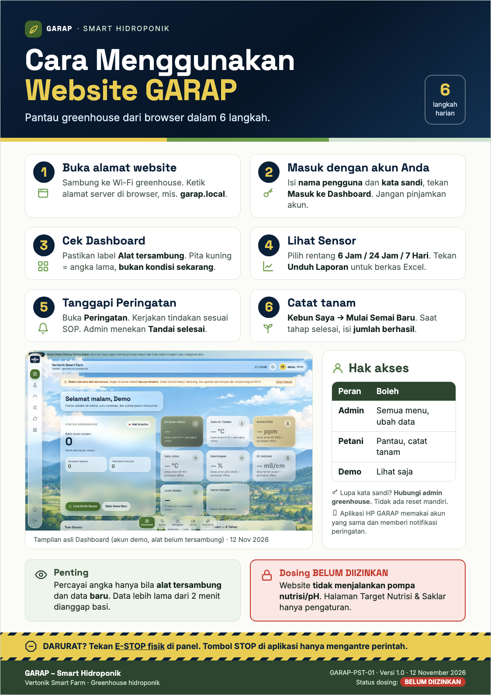
Cara menggunakan websiteA3 portrait · buka HTML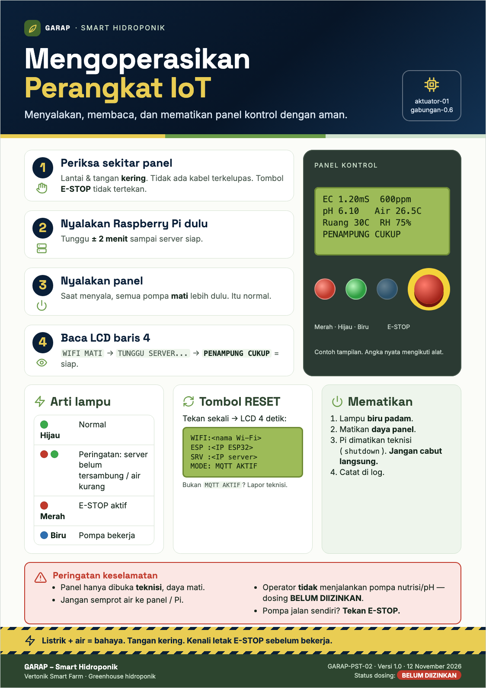
Mengoperasikan perangkat IoTA3 portrait · buka HTML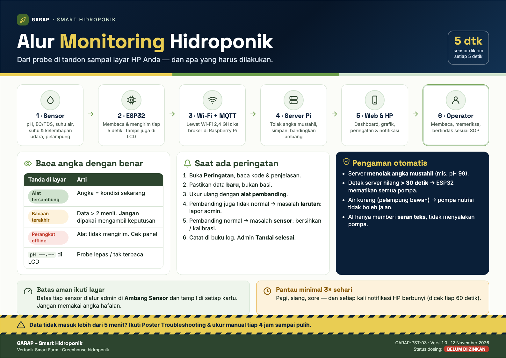
Alur monitoringA3 landscape · buka HTML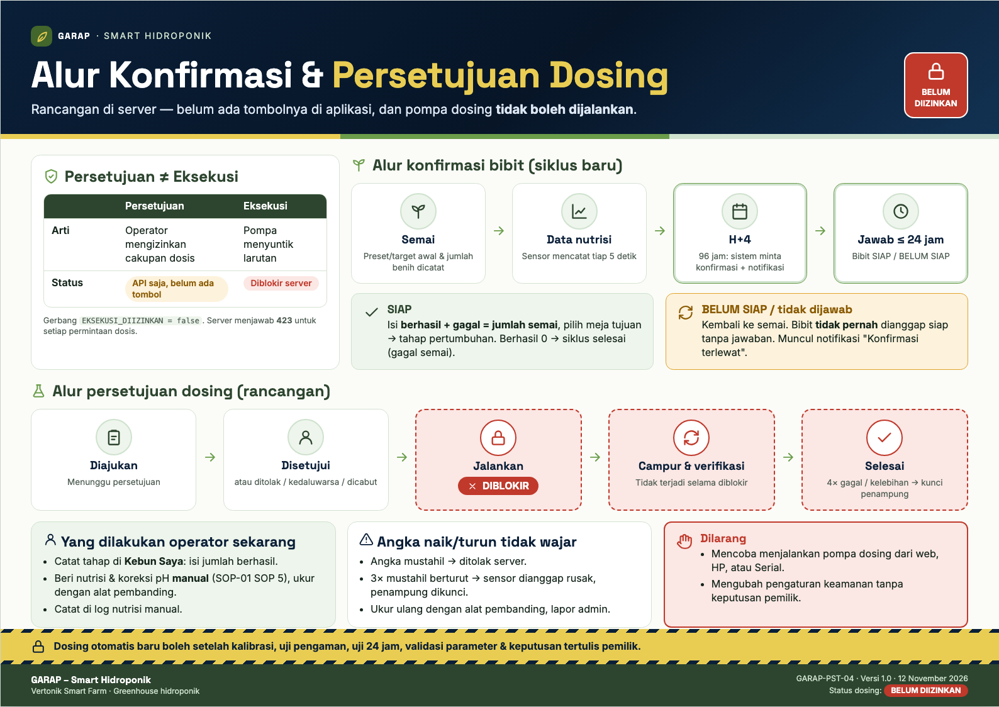
Alur konfirmasi & persetujuan dosingA3 landscape · buka HTML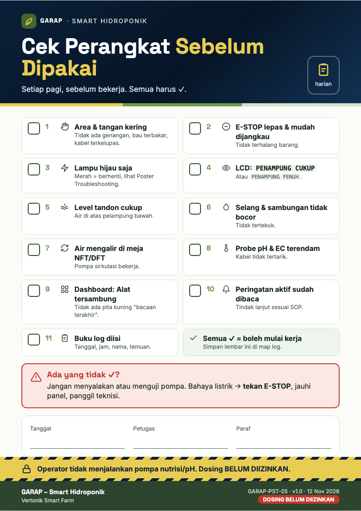
Cek perangkat sebelum dipakaiA4 portrait · buka HTML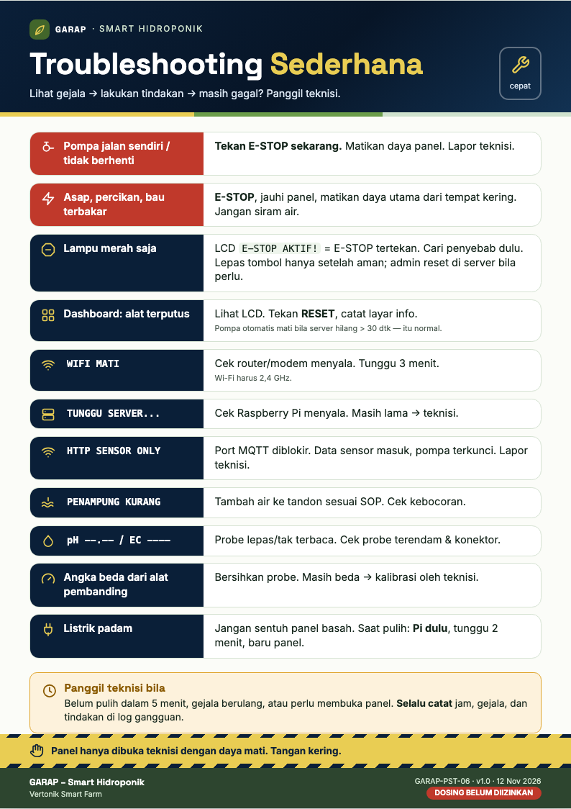
Troubleshooting sederhanaA4 portrait · buka HTMLLaporan Inventarisasi dan Audit Repository GARAP
| Atribut | Isi |
|---|---|
| Nomor dokumen | GARAP-DOK-00 |
| Versi | 1.0 |
| Tanggal audit | 12 November 2026 |
| Lingkup | Repository induk Vertoniksmartfarm (web, mobile, firmware, konfigurasi Pi) dan salinan lokal repository backend backend-nodejs |
| Sifat | Baca-saja. Tidak ada source code, firmware, database, atau konfigurasi yang diubah. |
Catatan keselamatan. Gerbang dosis backend
EKSEKUSI_DIIZINKAN = false(berkasbackend-nodejs/src/gerbangDosis.jsbaris 21). Seluruh dokumentasi ini memperlakukan eksekusi dosing sebagai BELUM DIIZINKAN.
1. Struktur repository yang diperiksa
| Bagian | Lokasi | Teknologi | Catatan audit |
|---|---|---|---|
| Website | react-web-app/ |
React 19, Vite, TypeScript, Tailwind v3 | 26 halaman, rute di src/router.tsx, menu di src/layouts/AppShell.tsx |
| Aplikasi mobile | flutter_mobile_app/ |
Flutter (Android, iOS) | 16 halaman di lib/pages/, panggilan API di lib/services/api_service.dart |
| Backend (repo terpisah) | backend-nodejs/ (salinan lokal greenhouse_arutmin_backend) |
Node.js, Express, PostgreSQL, MQTT | 32 berkas rute; commit terbaru 0383c55 (12 Nov 2026, 21:27): kirim uji pompa, laju pompa, dan kalibrasi pH ke alat |
| Firmware ESP32 | deploy-pi/firmware/ |
Arduino C++ | gabungan/gabungan.ino (aktif, v0.6, di-commit ec04293 pada 12 Nov 2026); sensor/ dan aktuator/ (v0.2, rancangan dua papan) |
| Konfigurasi Raspberry Pi | deploy-pi/ |
Mosquitto, systemd, nginx, Ollama, skrip bash | mosquitto/garap.conf, mosquitto/garap.acl, systemd/vertonik-api.service, nginx/vertonik.conf |
| Dokumentasi lama | docs/ |
Markdown | ±90 berkas; sebagian sudah tidak sesuai kode (lihat bagian 6) |
| Dokumentasi Juknas/Juknis lama | docs/juknas-juknis/ |
Markdown, HTML, PDF, PNG | Modul dan 2 poster; dipakai sebagai bahan banding, tidak ditimpa |
2. Inventaris komponen perangkat (sesuai firmware aktif gabungan-0.6)
| Komponen | Status | Bukti |
|---|---|---|
| ESP32 Dev Module (satu papan gabungan sensor + aktuator) | Ada di firmware | gabungan.ino baris 1–30 |
| ADC ADS1115 (alamat 0x48): kanal A0 = pH, A1 = EC (pembagi 10k/10k) | Ada di firmware | gabungan.ino baris 68–74 |
| Probe pH (model "DFRobot Gravity KB2003" tidak disebut di firmware) | [PERLU VERIFIKASI] model | Firmware hanya membaca tegangan pH lewat ADS1115 |
| Probe EC/TDS | Ada di firmware | gabungan.ino A1 |
| DS18B20 suhu air, GPIO 4 | Ada di firmware | gabungan.ino baris 76 |
| SHT31 suhu & kelembapan udara (0x44) | Ada di firmware gabungan | DHT22 hanya ada di firmware lama sensor.ino v0.2 |
| Pompa peristaltik A (GPIO 25), B (26), pH Up (27), pH Down (18) | Ada di firmware | PIN_OUT baris 87 |
| Pompa isi air (GPIO 16) | Ada di firmware | PIN_OUT baris 87 |
| Solenoid valve | Tidak ada di firmware gabungan. Hanya disebut di aktuator.ino v0.2 (rancangan dua papan) |
[PERLU VERIFIKASI] apakah terpasang |
| Modul relay (HIGH-trigger) | Ada di firmware | RELAY_AKTIF_LOW = false baris 85 |
| Pelampung bawah (GPIO 32) dan atas (GPIO 33) | Ada di firmware | baris 92–93 |
| Lampu pilot merah (13), hijau (17), biru (23) via ULN2003 | Ada di firmware | baris 96–98 |
| LCD 20x4 I2C (0x27) | Ada di firmware | baris 100 |
| Tombol RESET (GPIO 19) | Ada di firmware v0.6 | baris 99 |
| E-STOP: bus +12 V lewat pembagi 33k/10k ke GPIO 36 | Ada di firmware | baris 112–117 |
| Catu daya 12 V | Disebut di komentar firmware | Kapasitas arus [PERLU VERIFIKASI] |
| Raspberry Pi (API, PostgreSQL, Mosquitto, nginx, Ollama) | Ada di konfigurasi | deploy-pi/ |
| Kapasitas debit pompa (mL/detik) | Belum dikalibrasi (nilai awal 0 = perintah berbasis mL ditolak) | ML_PER_DETIK baris 89 |
3. Pemetaan status fitur
Kategori: SUDAH BERFUNGSI (ada di kode dan tes, tampil di aplikasi), SEDANG DIKEMBANGKAN (baru masuk kode, terkunci bawaan, atau belum lengkap), BELUM DIIMPLEMENTASIKAN (tidak ada di antarmuka), TIDAK AKTIF (ada di kode tetapi sengaja dimatikan), BELUM TERVERIFIKASI (ada di kode, belum diuji di perangkat nyata).
3.1 Website
| Fitur | Rute | Status |
|---|---|---|
| Login, logout, sesi | /login |
SUDAH BERFUNGSI |
| Peran admin, petani, demo (demo baca-saja) | semua | SUDAH BERFUNGSI |
| Dashboard | /dashboard |
SUDAH BERFUNGSI |
Sensor real-time + unduh laporan .xlsx |
/sensor-realtime |
SUDAH BERFUNGSI |
| Peringatan (riwayat alert, admin menandai sudah ditangani) | /peringatan |
SUDAH BERFUNGSI |
| Kebun Saya (mulai semai, daftar batch, prediksi panen) | /tanam |
SUDAH BERFUNGSI |
| Data tahap Semai, Peremajaan, Pendewasaan, Panen (selesaikan tahap dengan jumlah berhasil) | /semai … /panen |
SUDAH BERFUNGSI |
| Target Nutrisi: target naik harian, target penampung, parameter, keamanan, perawatan | /dosing |
SUDAH BERFUNGSI (pengaturan saja; tidak menjalankan pompa) |
| Saran nutrisi dari tren | /dosing |
SUDAH BERFUNGSI (teks saran saja) |
| Saklar izin aktuator dan mode isi air | /saklar |
SUDAH BERFUNGSI (izin saja) |
| Kalibrasi sensor (catat dan riwayat) | /kalibrasi |
SUDAH BERFUNGSI di server; pH dikirim ke ESP32 sebagai tegangan probe (ph_v7/ph_v4) bila alat melaporkan ph_volt (firmware v0.6, perlu flash ulang); EC belum dikirim (hanya tersimpan di server) |
| Data uji lab | /data |
SUDAH BERFUNGSI |
| Master data: jenis tanaman, meja, ambang sensor | /tanaman, /meja, /ambang |
SUDAH BERFUNGSI |
| Laporan | /laporan |
SUDAH BERFUNGSI |
| Manajemen user | /user |
SUDAH BERFUNGSI |
| Riwayat audit (Catatan Aktivitas) | /audit |
SUDAH BERFUNGSI |
| Akun saya (profil, sandi, tema) | /profil |
SUDAH BERFUNGSI |
| CCTV | /cctv |
SUDAH BERFUNGSI (perlu kamera terpasang) |
| Asisten AI (saran teks, tanpa akses ke aktuator) | /asisten-ai |
SUDAH BERFUNGSI (butuh Ollama di Pi) |
| Pengaturan Alat | /pengaturan-alat |
SUDAH BERFUNGSI (pengaturan di server) |
| Pemulihan Papan | /pemulihan-papan |
SEDANG DIKEMBANGKAN (paket disiapkan, belum dikirim ke papan) |
| Koneksi Alat (diagnostik MQTT) | /mqtt-diagnostik |
SUDAH BERFUNGSI |
| Tombol STOP pompa | komponen TombolStopPompa |
SUDAH BERFUNGSI (mengantre perintah STOP; tetap gunakan E-STOP fisik) |
| Uji pompa dan kalibrasi laju pompa dari aplikasi | /iot-v41/uji-pompa, /iot-v41/kalibrasi-pompa |
SEDANG DIKEMBANGKAN (backend 0383c55 mengirim UJI_POMPA/KALIBRASI ke alat; dikunci bawaan UJI_POMPA_DIIZINKAN, hanya admin, wajib mode pemeliharaan; belum diuji di perangkat) |
| Kontrol air (isi, stop, ganti mode) | /watercontrol |
TIDAK AKTIF (backend menjawab 503 kontrol_air_nonaktif) |
| Siklus budidaya bertahap: konfirmasi tandon, konfirmasi peremajaan H+4, batas jawab 24 jam, konfirmasi jumlah benih | API /api/siklus, /api/konfirmasi |
BELUM DIIMPLEMENTASIKAN di antarmuka (hanya API backend); penjadwal TIDAK AKTIF secara bawaan (SIKLUS_PENJADWAL) |
| Persetujuan dosing (ajukan, setujui, tolak, cabut) | API /api/dosing/siklus |
BELUM DIIMPLEMENTASIKAN di antarmuka (hanya API backend) |
| Eksekusi dosing | jalankan() |
TIDAK AKTIF — diblokir EKSEKUSI_DIIZINKAN = false |
| Permintaan dosis langsung | POST /api/aktuator/perintah tipe DOSIS |
TIDAK AKTIF (dijawab 423 butuh_alur_persetujuan) |
3.2 Aplikasi mobile (Flutter)
| Fitur | Halaman | Status |
|---|---|---|
| Login, simpan sesi | login_page.dart |
SUDAH BERFUNGSI |
| Beranda petani dan dashboard | beranda_petani.dart, dashboard_page.dart |
SUDAH BERFUNGSI |
| Sensor dan riwayat monitoring | sensor_page.dart, riwayat_monitoring_page.dart |
SUDAH BERFUNGSI |
| Peringatan + notifikasi lokal (dicek tiap 60 detik, menampilkan 3 peringatan baru per pemeriksaan) | peringatan_page.dart, notifikasi_service.dart |
SUDAH BERFUNGSI |
| Tanam (mulai semai, lihat batch) | tanam_page.dart |
SUDAH BERFUNGSI |
| Target naik harian (lihat) | naik_harian_page.dart |
SUDAH BERFUNGSI |
| Saklar (admin dapat mengubah) | saklar_page.dart |
SUDAH BERFUNGSI |
| Kontrol air | watercontrol_page.dart |
TIDAK AKTIF (server 503); tombol STOP pompa tetap ada |
| Uji lab, laporan PDF, CCTV, asisten AI, profil | halaman terkait | SUDAH BERFUNGSI |
| Konfirmasi tahap pertumbuhan versi siklus baru dan persetujuan dosing | — | BELUM DIIMPLEMENTASIKAN |
3.3 Perangkat IoT dan Raspberry Pi
| Hal | Status |
|---|---|
Firmware gabungan-0.6 |
BELUM TERVERIFIKASI (sudah di-commit, belum dikompilasi/di-flash/diuji dalam audit ini) |
| Broker Mosquitto port 1883, tanpa anonim, ACL per perangkat | Ada di konfigurasi; BELUM TERVERIFIKASI di Pi nyata |
| Fail-safe 30 detik tanpa detak server | Ada di firmware; BELUM TERVERIFIKASI di perangkat |
| E-STOP fisik dan dari server | Ada di firmware; BELUM TERVERIFIKASI di perangkat |
| Raspberry Pi | BELUM TERVERIFIKASI — audit 11 November 2026 mencatat Pi tidak terjangkau (No route to host) |
| Kapasitas tandon 3.000 liter | [PERLU VERIFIKASI] — basis data pengembangan mencatat volume penampung 250 L (halaman Saklar) |
4. Alur operasional dan dosing yang ditemukan di kode
- Alur tahap yang dipakai antarmuka sekarang (model lama): Mulai Semai (tanaman, meja, jumlah benih, tanggal) → Selesaikan tahap dengan jumlah berhasil → server membuat tahap berikutnya (Peremajaan → Pendewasaan → Panen). Berhasil 0 = tahap gagal.
- Alur siklus budidaya baru (backend, belum ada antarmuka):
DRAFT → TANK_PREPARATION → WAITING_TANK_CONFIRMATION → SEEDING → WAITING_REJUVENATION_CONFIRMATION → WAITING_SEED_COUNT_CONFIRMATION → GROWTH → COMPLETED(dapatCANCELLED). Konfirmasi peremajaan dibuat 96 jam (H+4) setelah semai, batas jawab 24 jam. Tidak dijawab = kedaluwarsa, bibit tidak dianggap siap, siklus kembali ke SEEDING dan operator diberi notifikasi. - Alur persetujuan dosing (backend, belum ada antarmuka):
WAITING_APPROVAL → APPROVED → RUNNING → MIXING → VERIFYING → SUCCESS(atauREJECTED,EXPIRED,CANCELLED,EXHAUSTED,FAULT). Langkahjalankanselalu ditolak423karenaEKSEKUSI_DIIZINKAN = false. - Parameter waktu dan batas dibaca dari tabel parameter dan hanya dipakai bila berstatus SIAP (nilai sah dan tervalidasi). Tidak ada nilai tebakan.
5. Keamanan dan hak akses
| Hal | Temuan |
|---|---|
| Peran | admin (semua menu dan ubah data), petani (menu umum), demo (boleh melihat menu kelola, setiap perubahan ditolak 403) |
| Login | Rate limit 10 percobaan per menit pada POST /login |
| Perangkat | MQTT dengan nama pengguna per perangkat dan ACL topik; API key perangkat untuk jalur HTTP |
6. Perbedaan dokumentasi lama dengan implementasi
| Dokumen lama | Isi lama | Fakta di kode | Yang dipakai |
|---|---|---|---|
docs/PANDUAN_UJI_ALAT_HARDWARE.md |
Firmware gabungan-0.4, tombol RESET belum dipakai |
Firmware gabungan-0.6, tombol RESET menampilkan info jaringan dan melepas kunci E-STOP lokal bila aman |
Kode (dengan catatan v0.6 belum di-commit) |
deploy-pi/PANDUAN_SERVER_PI.md |
ESP32 memakai HTTP polling dua papan | Firmware gabungan memakai MQTT, HTTP hanya cadangan | Kode |
| Prompt kerja | Sensor DHT22 | Firmware aktif memakai SHT31 | Kode |
| Prompt kerja | Solenoid valve | Tidak ada di firmware aktif | Ditandai [PERLU VERIFIKASI] |
README.md |
Menu "Dosing Otomatis", "Water Control" | Menu kini "Target Nutrisi"; Water Control dialihkan ke Dashboard | Kode |
| Halaman Saklar | "otomasi menyuntik nutrisi" bila saklar ON | Tidak ada jalur otomasi yang mengirim perintah DOSIS; gerbang menolak | Kode — dokumen menegaskan dosing tetap diblokir |
7. Bukti visual
Tangkapan layar asli diambil dari website yang berjalan di komputer pengembang (127.0.0.1:5173) dengan akun demo (baca-saja), 12 November 2026. Lokasi: 03-VISUAL-PREVIEW/assets/screenshots/. Data di layar adalah data pengembangan (alat tidak tersambung), bukan kondisi greenhouse.
PETUNJUK PELAKSANAAN NASIONAL (JUKNAS) SISTEM GARAP – SMART HIDROPONIK
Halaman Identitas Dokumen
| Atribut | Isi |
|---|---|
| Judul | Petunjuk Pelaksanaan (Juknas) Sistem GARAP – Smart Hidroponik |
| Nomor dokumen | GARAP-JUKNAS-01 |
| Versi | 1.0 |
| Tanggal terbit | 12 November 2026 |
| Status | Draf resmi — menunggu pengesahan pengelola |
| Pemilik sistem | Vertonik Smart Farm / Greenhouse GARAP |
| Penyusun | Tim Dokumentasi GARAP |
| Dasar penyusunan | Audit kode sumber 12 November 2026 (web, mobile, backend, firmware gabungan-0.6, konfigurasi Raspberry Pi) |
| Dokumen terkait | Juknis Website (GARAP-JUKNIS-01), Juknis IoT (GARAP-JUKNIS-02), Juknis Instalasi (GARAP-JUKNIS-03), SOP Pengoperasian (GARAP-SOP-01), SOP Pemeliharaan (GARAP-SOP-02) |
Riwayat revisi
| Versi | Tanggal | Perubahan | Disetujui |
|---|---|---|---|
| 1.0 | 12-11-2026 | Terbitan pertama berdasarkan audit kode | [PERLU VERIFIKASI] |
Lembar pengesahan
| Peran | Nama | Tanda tangan | Tanggal |
|---|---|---|---|
| Penanggung jawab sistem | [PERLU VERIFIKASI] | ||
| Administrator sistem | [PERLU VERIFIKASI] | ||
| Koordinator greenhouse | [PERLU VERIFIKASI] |
Peringatan. STATUS DOSING: BELUM DIIZINKAN. Alur persetujuan dosing sudah dirancang di server, tetapi eksekusi dosis diblokir oleh gerbang keselamatan (
EKSEKUSI_DIIZINKAN = false). Tidak ada pompa nutrisi atau pH yang boleh dijalankan otomatis oleh sistem. Pemberian nutrisi tetap dilakukan manual oleh operator sesuai SOP sampai pemilik sistem menyatakan validasi keselamatan selesai.
BAB 1. Latar Belakang
Budidaya hidroponik menuntut larutan nutrisi yang terjaga: keasaman (pH), kepekatan nutrisi (EC/TDS), dan suhu air. Pemeriksaan manual memakan waktu, mudah terlewat, dan sulit dicatat rapi. Greenhouse GARAP memiliki beberapa meja hidroponik (NFT dan DFT) dengan tandon penampung bersama.
GARAP dikembangkan untuk:
- memantau kondisi larutan dan udara secara terus-menerus;
- mencatat setiap tahap tanam dari semai sampai panen;
- memberi peringatan bila kondisi keluar dari batas aman;
- menyiapkan dasar otomasi dosing yang aman, berlapis pengaman, dan selalu melibatkan persetujuan manusia.
BAB 2. Tujuan Pengembangan
| No | Tujuan | Status saat ini |
|---|---|---|
| 1 | Pemantauan pH, EC/TDS, suhu air, suhu dan kelembapan udara secara langsung | Tersedia di web dan mobile; perangkat di lapangan [PERLU VERIFIKASI] |
| 2 | Pencatatan siklus tanam (semai, peremajaan, pendewasaan, panen) | Tersedia |
| 3 | Pengaturan target nutrisi per tanaman dan per penampung | Tersedia (pengaturan saja) |
| 4 | Peringatan kondisi tidak normal | Tersedia (web, notifikasi mobile) |
| 5 | Dosing otomatis dengan persetujuan operator | Belum diizinkan — server menolak eksekusi |
| 6 | Jejak audit setiap perubahan | Tersedia |
BAB 3. Ruang Lingkup Sistem
Termasuk dalam lingkup:
- Website GARAP (pemantauan, pengelolaan data, pengaturan).
- Aplikasi mobile GARAP (Android/iOS) untuk operator.
- Perangkat IoT: satu papan ESP32 gabungan (sensor + aktuator) per penampung, dengan LCD, lampu pilot, pelampung, dan tombol E-STOP.
- Server lokal Raspberry Pi: API, basis data PostgreSQL, broker MQTT Mosquitto, server web nginx, asisten AI lokal (Ollama).
Tidak termasuk dalam lingkup dokumen ini:
- Pengaktifan eksekusi dosing otomatis (diputuskan terpisah oleh pemilik setelah validasi).
- Perubahan kode, firmware, atau konfigurasi.
- Rekomendasi agronomi di luar yang tersimpan di sistem.
BAB 4. Sasaran Pengguna
| Pengguna | Peran di sistem | Kebutuhan utama |
|---|---|---|
| Administrator | admin |
Mengelola akun, master data, parameter, saklar, kalibrasi |
| Operator greenhouse / petani | petani |
Memantau, mencatat tahap tanam, menanggapi peringatan |
| Teknisi IoT | (akun admin bila perlu akses Kalibrasi/Koneksi Alat) |
Memasang, menguji, merawat perangkat |
| Pengelola sistem | admin |
Server Pi, cadangan data, keamanan |
| Pihak kampus / mitra industri | demo |
Melihat tanpa bisa mengubah data |
BAB 5. Gambaran Umum GARAP
GARAP terdiri atas tiga lapisan:
- Lapisan lapangan — sensor dan pompa di panel kontrol dekat tandon.
- Lapisan server lokal — Raspberry Pi di jaringan greenhouse menerima data, menyimpan, menilai keamanan, dan meneruskan perintah aman (STOP, E-STOP).
- Lapisan pengguna — website dan aplikasi mobile.
Prinsip keselamatan yang tertanam di sistem:
- Firmware tidak mempercayai server begitu saja: batas mL per suntikan, batas mL per jam, batas durasi pompa, satu pekerjaan dalam satu waktu.
- Bila detak server hilang lebih dari 30 detik, semua pompa dimatikan (fail-safe).
- Tombol E-STOP fisik mematikan dan mengunci semua output.
- Pompa nutrisi berhenti bila pelampung bawah menunjukkan air kurang; pompa isi berhenti bila pelampung atas penuh.
- Server menolak bacaan mustahil (mis. pH 99) dan menandai bacaan basi (lebih dari 120 detik).
- Asisten AI hanya memberi saran teks dan tidak punya jalur ke pompa.
BAB 6. Arsitektur Sistem
flowchart LR
subgraph Lapangan["Panel kontrol greenhouse"]
S1["Sensor pH + EC<br/>(ADS1115)"]
S2["DS18B20<br/>suhu air"]
S3["SHT31<br/>suhu & RH udara"]
F["Pelampung<br/>bawah & atas"]
E["Tombol E-STOP"]
ESP["ESP32 gabungan<br/>aktuator-01"]
R["Relay → pompa A, B,<br/>pH Up, pH Down, isi air"]
L["LCD 20x4 +<br/>lampu pilot"]
S1 & S2 & S3 & F & E --> ESP
ESP --> R
ESP --> L
end
subgraph Pi["Raspberry Pi (server lokal)"]
MQ["Mosquitto<br/>MQTT :1883"]
API["GARAP API<br/>Node.js :8000"]
DB[("PostgreSQL")]
NG["nginx<br/>:80 / :443"]
AI["Ollama<br/>(saran saja)"]
MQ <--> API
API <--> DB
NG --> API
API --> AI
end
ESP <-- "Wi-Fi 2,4 GHz<br/>MQTT" --> MQ
ESP -. "cadangan HTTP :80<br/>(sensor saja)" .-> NG
WEB["Website"] --> NG
HP["Aplikasi mobile"] --> NGRincian teknis ada di 04-REFERENSI/Arsitektur_Sistem.md.
BAB 7. Komponen Sistem
7.1 Website
Aplikasi web (React) yang dibuka melalui browser ke alamat server Pi. Menu dikelompokkan menjadi PANTAU, KENDALI, DATA, SISTEM, SIKLUS TANAM, dan MASTER DATA. Rincian di Juknis Website.
7.2 Aplikasi mobile
Aplikasi Flutter untuk operator di lapangan: dashboard, sensor, peringatan dengan notifikasi, tanam, target naik harian, saklar, uji lab, laporan PDF, CCTV, asisten AI, profil, dan tombol STOP pompa.
7.3 Perangkat IoT
| Komponen | Fungsi |
|---|---|
ESP32 gabungan (aktuator-01, firmware gabungan-0.6) |
Membaca sensor tiap 5 detik, menjalankan perintah aman, mengendalikan relay |
| ADS1115 + probe pH + probe EC | Mengukur keasaman dan kepekatan nutrisi |
| DS18B20 | Suhu air tandon |
| SHT31 | Suhu dan kelembapan udara |
| Pelampung bawah/atas | Pengaman level air |
| Relay + pompa peristaltik 12 V (A, B, pH Up, pH Down) | Penakar larutan — eksekusi dosing BELUM DIIZINKAN |
| Pompa isi air | Pengisian tandon — kontrol dari aplikasi TIDAK AKTIF |
| LCD 20x4 + lampu merah/hijau/biru | Informasi kondisi di panel |
| Tombol E-STOP dan tombol RESET | Penghentian darurat dan informasi jaringan |
| Raspberry Pi | Server lokal |
Daftar lengkap dan status verifikasi ada di 04-REFERENSI/Daftar_Komponen.md.
BAB 8. Cara Kerja Sistem
sequenceDiagram
participant ESP as ESP32 gabungan
participant MQ as Broker MQTT (Pi)
participant API as GARAP API (Pi)
participant U as Website / Mobile
loop tiap 5 detik
ESP->>MQ: garap/aktuator-01/data (pH, TDS, suhu, RH, pelampung)
MQ->>API: teruskan bacaan
API->>API: tolak bacaan mustahil, simpan, cek ambang
end
loop tiap 5 detik
API->>MQ: garap/server/status {online, estop}
MQ->>ESP: detak server
end
U->>API: lihat dashboard / sensor
API-->>U: bacaan terakhir + status (segar / basi)
API-->>U: peringatan bila di luar ambang
Note over ESP: Detak hilang > 30 detik → semua pompa OFFAlur tanam yang dipakai antarmuka saat ini:
flowchart LR A["Mulai Semai<br/>tanaman, meja,<br/>jumlah benih"] --> B["Semai"] B -- "Selesaikan tahap<br/>(isi jumlah berhasil)" --> C["Peremajaan"] C -- "Selesaikan tahap" --> D["Pendewasaan"] D -- "Selesaikan tahap" --> E["Panen"] B -- "berhasil = 0" --> X["Gagal"]
Alur siklus bertahap dengan konfirmasi H+4 dan persetujuan dosing dijelaskan di SOP Pengoperasian Bab 6. Keduanya belum tersedia di antarmuka.
BAB 9. Pembagian Tanggung Jawab
| Kegiatan | Operator (petani) | Administrator | Teknisi IoT |
|---|---|---|---|
| Pemeriksaan harian sebelum operasi | Pelaksana | Pemantau | — |
| Memantau dashboard dan peringatan | Pelaksana | Pemantau | — |
| Mencatat semai dan menyelesaikan tahap | Pelaksana (mobile) | Pelaksana (web) | — |
| Menandai peringatan sudah ditangani | — | Pelaksana | — |
| Mengubah saklar, parameter, target | — | Pelaksana | Konsultan |
| Kalibrasi sensor | Membantu | Mencatat di web | Pelaksana |
| Membuka panel listrik, wiring, flash firmware | Dilarang | — | Pelaksana |
| Mengelola akun dan cadangan data | — | Pelaksana | — |
| Menekan E-STOP saat darurat | Wajib | Wajib | Wajib |
| Mereset E-STOP di server | — | Pelaksana setelah penyebab diperiksa | Pemeriksa |
BAB 10. Ketentuan Umum Pengoperasian
- Sistem hanya dioperasikan oleh pengguna yang punya akun. Satu orang satu akun; sandi tidak dibagikan.
- Akun
demohanya untuk melihat. Semua perubahan dari akun demo ditolak. - Angka di layar dipercaya hanya bila status alat tersambung dan bacaan segar. Bila muncul tanda "bacaan terakhir" atau "perangkat offline", angka tersebut bukan kondisi saat ini.
- Setiap perubahan parameter dicatat di Riwayat Audit; perubahan wajib punya alasan.
- Parameter keselamatan yang belum berstatus SIAP membuat fitur terkait tidak berjalan. Jangan mengisi angka tebakan.
- Pemberian nutrisi dan koreksi pH dilakukan manual oleh operator, diukur dengan alat ukur pembanding, dan dicatat.
- Saran dari Asisten AI dan kartu "Saran nutrisi" adalah saran, bukan perintah. Keputusan tetap pada operator.
BAB 11. Ketentuan Keselamatan
Hati-hati. Greenhouse memiliki kelembapan tinggi. Listrik dan cairan berada berdekatan. Kelalaian dapat menyebabkan sengatan listrik, korsleting, atau kerusakan tanaman.
- Panel listrik hanya dibuka oleh teknisi, dalam keadaan daya dimatikan.
- Tangan harus kering saat menyentuh panel, saklar, atau steker.
- Jangan menyemprot air ke panel, Raspberry Pi, atau catu daya.
- Kenali letak tombol E-STOP sebelum bekerja. Tekan bila ada pompa berjalan tidak wajar, bau terbakar, percikan, atau kebocoran.
- Larutan pH Up/pH Down dan nutrisi pekat ditangani dengan sarung tangan dan kacamata pelindung.
- Uji pompa selalu dengan air bersih, selang diarahkan ke gelas ukur, bukan ke tandon tanaman.
- Daya pompa 12 V tidak boleh diambil dari pin ESP32; harus lewat relay/MOSFET dengan dioda flyback.
- Eksekusi dosing otomatis BELUM DIIZINKAN. Jangan mencoba menjalankannya dengan cara apa pun.
- Tombol STOP di aplikasi hanya mengantre perintah berhenti. Bila pompa harus berhenti seketika, gunakan E-STOP fisik.
BAB 12. Pemeliharaan Sistem
| Frekuensi | Kegiatan | Pelaksana | Acuan |
|---|---|---|---|
| Harian | Pemeriksaan sebelum operasi, cek peringatan | Operator | SOP-01 |
| Mingguan | Bersihkan probe, cek kabel dan selang, cek kalibrasi dengan larutan standar | Teknisi | SOP-02 |
| Bulanan | Kalibrasi pH dua titik dan EC, cek relay dan E-STOP, cadangan basis data | Teknisi + Admin | SOP-02 |
| Saat ada gangguan | Penanganan sesuai jenis gangguan | Sesuai SOP-02 | SOP-02 |
BAB 13. Evaluasi dan Pengembangan
13.1 Indikator evaluasi
| Indikator | Cara ukur |
|---|---|
| Ketersediaan data | Celah bacaan tidak lebih dari 2 menit dalam 24 jam |
| Ketepatan sensor | Selisih terhadap alat pembanding (pH ≤ 0,1; EC ≤ 5 %; suhu air ≤ 0,5 °C) |
| Respons peringatan | Waktu dari peringatan muncul sampai ditangani |
| Keandalan pengaman | Hasil uji E-STOP, fail-safe, dan pelampung (Juknis IoT Bab 10) |
13.2 Syarat sebelum dosing boleh diaktifkan (keputusan pemilik)
- Kalibrasi pH, EC, dan laju setiap pompa selesai dan tercatat.
- Seluruh uji pengaman saat pompa berjalan lulus (E-STOP, server hilang, Wi-Fi putus, air kurang, tandon penuh, daya ESP32 putus).
- Uji tahan 24 jam tanpa dosis lulus.
- Parameter dosing dan preset berstatus TERVALIDASI/SIAP.
- Antarmuka persetujuan dosing selesai dan diuji.
- Peninjauan kode dan keputusan tertulis pemilik untuk mengubah gerbang.
13.3 Rencana pengembangan yang tercatat
- Antarmuka siklus budidaya bertahap (konfirmasi tandon, peremajaan H+4, jumlah benih).
- Antarmuka persetujuan dosing.
- Pengiriman kalibrasi EC dan paket pemulihan papan ke ESP32 (kalibrasi pH dan laju pompa sudah dikirim, belum diuji di perangkat).
- Pengaktifan kontrol air setelah validasi.
BAB 14. Lampiran
| Lampiran | Lokasi |
|---|---|
| A. Arsitektur sistem rinci | 04-REFERENSI/Arsitektur_Sistem.md |
| B. Daftar komponen | 04-REFERENSI/Daftar_Komponen.md |
| C. Glosarium | 04-REFERENSI/Glosarium.md |
| D. Daftar verifikasi dokumentasi | 04-REFERENSI/Daftar_Verifikasi_Dokumentasi.md |
| E. Laporan inventarisasi audit | 00-INVENTARISASI/Laporan_Inventarisasi_Audit.md |
| F. Poster panduan | 02-POSTER-PANDUAN/ |
PETUNJUK TEKNIS (JUKNIS) PENGOPERASIAN WEBSITE GARAP
| Atribut | Isi |
|---|---|
| Nomor dokumen | GARAP-JUKNIS-01 |
| Versi | 1.0 |
| Tanggal | 12 November 2026 |
| Berlaku untuk | Website GARAP (React), rute dan menu sesuai react-web-app/src/router.tsx dan src/layouts/AppShell.tsx |
| Sumber gambar | Tangkapan layar asli dari website lokal, akun demo, 12 November 2026. Data di layar adalah data pengembangan, alat sedang tidak tersambung. |
| Acuan | Juknas GARAP-JUKNAS-01 |
Peringatan. Dosing otomatis BELUM DIIZINKAN. Halaman Target Nutrisi, Saklar, dan Kalibrasi hanya menyimpan pengaturan. Tidak ada tombol di website yang menjalankan dosis nutrisi atau pH. Server menolak setiap perintah dosis (
423).
Daftar Isi
- Akses dan hak pengguna
- Login dan logout
- Tata letak layar
- Dashboard
- Sensor (monitoring)
- Peringatan (notifikasi)
- Kebun Saya (pengelolaan tanaman)
- Siklus Tanam: Semai, Peremajaan, Pendewasaan, Panen (konfirmasi tahap)
- Target Nutrisi (preset, target nutrisi, parameter)
- Saklar
- Kalibrasi
- Data, Laporan, dan Riwayat Audit (riwayat data)
- Master Data: Jenis Tanaman, Meja Tanaman (tandon), Ambang Sensor
- Sistem: Pengaturan Alat, Pemulihan Papan, Koneksi Alat
- Manajemen User dan Akun Saya (pengaturan pengguna)
- CCTV dan Asisten AI
- Tombol STOP pompa
- Fitur yang belum tersedia
- Tabel masalah umum
1. Akses dan Hak Pengguna
Website dibuka melalui browser ke alamat server Raspberry Pi, misalnya https://garap.local atau https://vertonik.local (alamat IP Pi bila nama tidak ditemukan). Alamat tetap greenhouse: [PERLU VERIFIKASI].
| Menu | Admin | Petani | Demo |
|---|---|---|---|
| Dashboard, Sensor, Peringatan, CCTV, Asisten AI, Kebun Saya, Akun Saya | Ya | Ya | Ya (lihat) |
| Saklar, Target Nutrisi, Kalibrasi, Data, Catatan Aktivitas, Laporan | Ya | Tidak | Ya (lihat) |
| Pengaturan Alat, Pemulihan Papan, Koneksi Alat, Manajemen User | Ya | Tidak | Ya (lihat) |
| Semai, Peremajaan, Pendewasaan, Panen | Ya | Tidak | Ya (lihat) |
| Jenis Tanaman, Meja Tanaman, Ambang Sensor | Ya | Tidak | Ya (lihat) |
| Mengubah data | Ya | Terbatas (mulai semai, selesaikan tahap) | Tidak (ditolak 403) |
Akun demo menampilkan pita "Mode Demo (Hanya Terima Data)" di bagian atas layar.
2. Login dan Logout
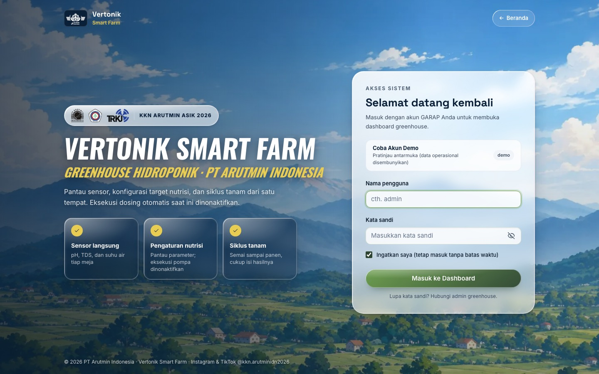
| Butir | Uraian |
|---|---|
| Fungsi | Memastikan hanya pengguna terdaftar yang membuka GARAP |
| Persyaratan | Akun dibuat admin; komputer/HP tersambung ke jaringan greenhouse |
Langkah login
- Buka alamat website di browser.
- Isi Nama pengguna dan Kata sandi.
- Centang Ingatkan saya hanya di perangkat pribadi.
- Tekan Masuk ke Dashboard.
Tombol dan menu
| Elemen | Fungsi |
|---|---|
| Coba Akun Demo | Mengisi nama pengguna demo untuk pratinjau baca-saja |
| Ingatkan saya | Sesi tetap aktif tanpa batas waktu di perangkat itu |
| Lupa kata sandi? | Hubungi admin greenhouse (tidak ada reset mandiri) |
Logout: tekan ikon keluar di bagian bawah menu kiri, lalu konfirmasi.
Hasil yang diharapkan: layar Dashboard terbuka.
| Masalah | Penyebab | Cara mengatasi |
|---|---|---|
| "Nama pengguna atau kata sandi salah" | Salah ketik | Periksa huruf besar/kecil |
| Ditolak sementara | Batas 10 percobaan per menit | Tunggu 1 menit |
| Halaman tidak terbuka | Tidak satu jaringan dengan Pi, atau Pi mati | Lihat SOP-02 Bab 5 |
3. Tata Letak Layar
- Menu kiri (rail): ikon kelompok menu PANTAU, KENDALI, DATA, SISTEM, SIKLUS TANAM, MASTER DATA; ikon Tentang Kami dan Keluar di bawah.
- Bilah atas: judul halaman, jam, tombol tema terang/gelap, nama pengguna.
- Menu bawah (pil): submenu dari kelompok yang sedang dibuka.
- Di ponsel, menu kiri berubah menjadi tombol menu.
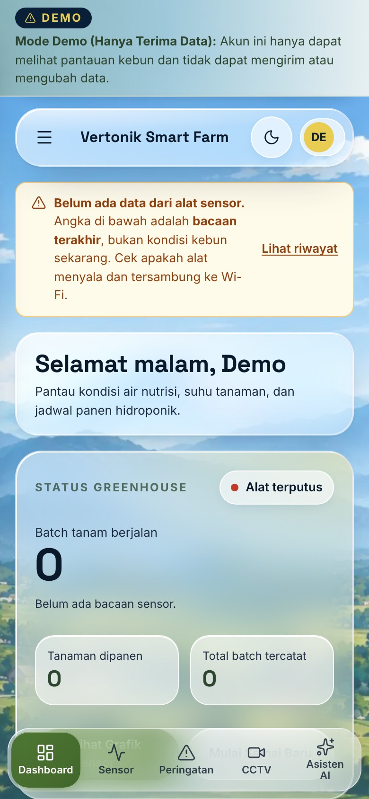
4. Dashboard
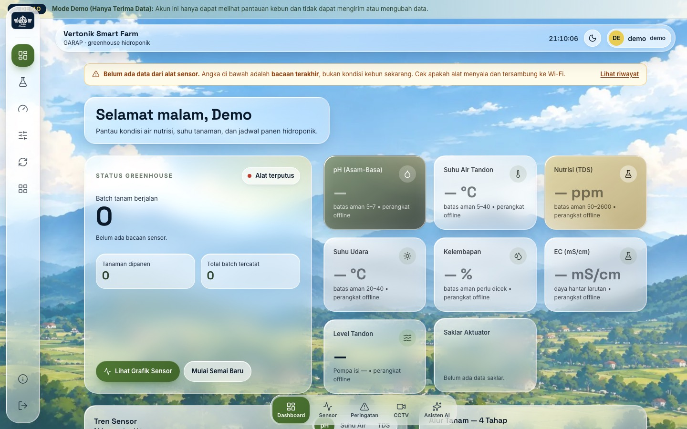
| Butir | Uraian |
|---|---|
| Fungsi | Ringkasan kondisi greenhouse dalam satu layar |
| Tujuan | Operator tahu dalam beberapa detik apakah kondisi aman |
| Persyaratan | Login |
Isi layar
| Bagian | Arti |
|---|---|
| Pita kuning "Belum ada data dari alat sensor" | Angka yang tampil adalah bacaan terakhir, bukan kondisi sekarang. Periksa alat. |
| Status Greenhouse | Jumlah batch berjalan, tanaman dipanen, total batch; label Alat terputus / tersambung |
| Kartu pH, Suhu Air Tandon, Nutrisi (TDS), Suhu Udara, Kelembapan, EC | Nilai terakhir dan batas aman |
| Level Tandon | Status pelampung dan pompa isi |
| Saklar Aktuator | Ringkasan saklar izin (klik untuk membuka Saklar) |
| Tren Sensor, Alur Tanam 4 Tahap | Grafik singkat dan ringkasan tahap |
| Tombol | Fungsi |
|---|---|
| Lihat Grafik Sensor | Membuka halaman Sensor |
| Mulai Semai Baru | Membuka formulir semai (admin) |
| Lihat riwayat | Membuka riwayat bacaan |
Contoh: pagi hari operator membuka Dashboard, melihat label Alat tersambung, pH 6,1 dalam batas 5–7, TDS dalam batas. Kondisi normal.
| Masalah | Cara mengatasi |
|---|---|
| Semua kartu "—" dan "perangkat offline" | Periksa panel (LCD, lampu) sesuai SOP-02 Bab 5 |
| Angka tidak berubah lama | Bacaan basi (>120 detik). Jangan ambil keputusan dari angka itu. |
5. Sensor (Monitoring)
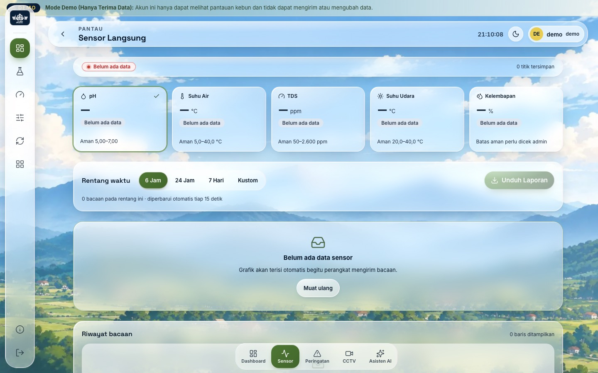
| Butir | Uraian |
|---|---|
| Fungsi | Grafik dan riwayat bacaan pH, suhu air, TDS, suhu udara, kelembapan |
| Persyaratan | Perangkat mengirim data |
Langkah
- Buka PANTAU → Sensor.
- Pilih Rentang waktu: 6 Jam, 24 Jam, 7 Hari, atau Kustom.
- Baca kartu nilai (dengan batas aman) dan grafik.
- Tekan Unduh Laporan untuk berkas Excel (
.xlsx) berisi sheet Ringkasan dan Data; sel di luar ambang diberi warna.
Halaman diperbarui otomatis tiap 15 detik.
| Masalah | Cara mengatasi |
|---|---|
| "Belum ada data sensor" | Alat belum mengirim. Cek koneksi alat. |
| Kelembapan "Batas aman perlu dicek admin" | Ambang kelembapan belum diatur benar di Master Data → Ambang Sensor |
6. Peringatan (Notifikasi)
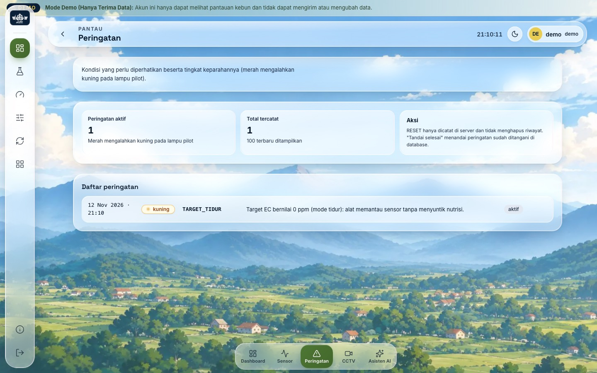
| Butir | Uraian |
|---|---|
| Fungsi | Menampilkan kondisi yang perlu diperhatikan beserta tingkat keparahan (merah, kuning) |
| Tujuan | Operator menanggapi kondisi tidak normal |
Langkah
- Buka PANTAU → Peringatan.
- Baca daftar: waktu, warna tingkat, kode, penjelasan, status (aktif/selesai).
- Lakukan tindakan sesuai SOP-02.
- Admin menekan Tandai selesai setelah penyebab ditangani. Tombol RESET hanya dicatat di server dan tidak menghapus riwayat.
Contoh peringatan yang tampil: TARGET_TIDUR (kuning) — target EC 0 ppm, alat memantau tanpa menyuntik nutrisi.
Notifikasi di aplikasi mobile memeriksa peringatan baru tiap 60 detik dan menampilkan paling banyak 3 peringatan baru per pemeriksaan.
7. Kebun Saya (Pengelolaan Tanaman)
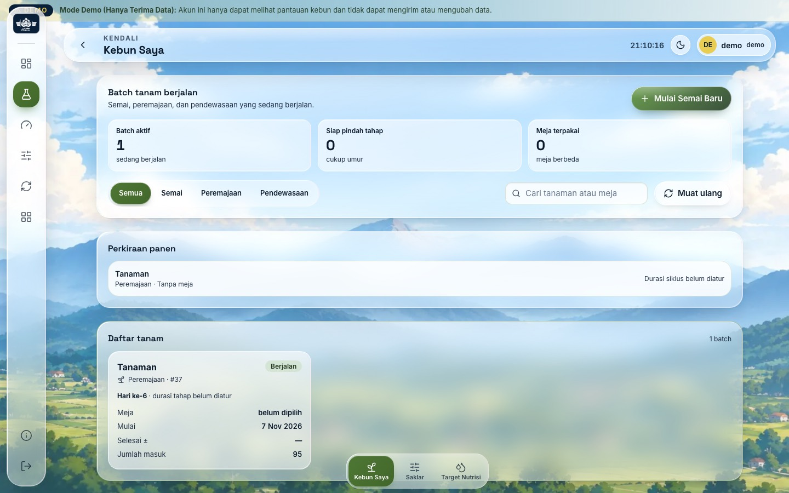
| Butir | Uraian |
|---|---|
| Fungsi | Daftar batch yang sedang berjalan, perkiraan panen, target nutrisi harian |
| Persyaratan | Jenis tanaman dan meja sudah ada di Master Data |
Langkah memulai semai (admin; input jumlah bibit)
- Tekan Mulai Semai Baru.
- Pilih Tanaman dan Meja tanam.
- Isi Jumlah benih (tombol − / +).
- Isi Tanggal mulai semai dan Keterangan (opsional).
- Simpan. Muncul pesan berhasil dan batch tampil di daftar.
| Elemen | Fungsi |
|---|---|
| Filter Semua / Semai / Peremajaan / Pendewasaan | Menyaring batch |
| Cari tanam aktif | Mencari menurut nama |
| Kartu batch | Tahap, hari ke-, meja, tanggal mulai, perkiraan selesai, jumlah masuk |
| Target nutrisi harian | Kurva ppm awal → target per tanaman |
| Masalah | Cara mengatasi |
|---|---|
| "Durasi siklus belum diatur" | Admin mengisi durasi tahap pada data tanaman |
| "Meja belum dipilih" | Pilih meja saat semai berikutnya; meja batch lama [PERLU VERIFIKASI] cara mengubahnya |
8. Siklus Tanam dan Konfirmasi Tahap Pertumbuhan
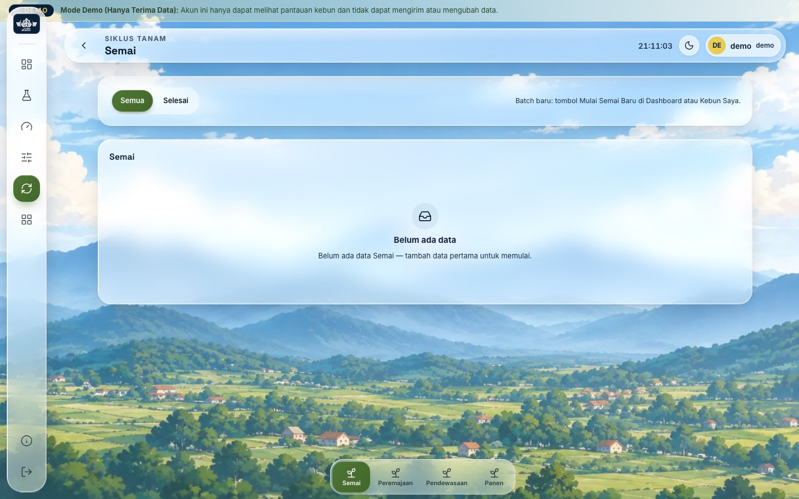
Menu SIKLUS TANAM: Semai (1) → Peremajaan (2) → Pendewasaan (3) → Panen (4).
| Butir | Uraian |
|---|---|
| Fungsi | Mencatat dan menutup tiap tahap |
| Konfirmasi tahap yang tersedia | Operator mengisi jumlah tanaman yang berhasil; server menghitung yang gagal dan otomatis membuat tahap berikutnya |
Langkah menyelesaikan tahap
- Buka halaman tahap (mis. Semai).
- Pada baris batch yang berjalan, tekan aksi selesaikan.
- Isi jumlah berhasil (tidak boleh melebihi jumlah masuk). Sistem menampilkan jumlah gagal.
- Simpan. Batch tahap berikutnya dibuat berisi tanaman yang berhasil.
- Bila berhasil = 0, tahap tercatat gagal.
Catatan. Konfirmasi peremajaan H+4 (96 jam) dengan batas jawab 24 jam, konfirmasi tandon siap, dan konfirmasi jumlah benih versi baru sudah ada di server tetapi belum ada tombolnya di website. Lihat Bab 18.
9. Target Nutrisi (Preset, Target, Parameter)
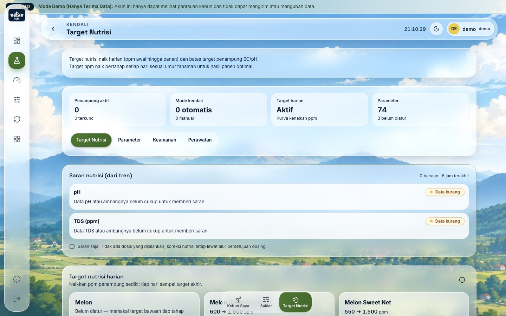
| Butir | Uraian |
|---|---|
| Fungsi | Mengatur target ppm naik harian per tanaman, batas target penampung EC/pH, parameter dosing dan waktu, aturan keamanan (fail-safe), jadwal perawatan |
| Hak | Admin mengubah; demo melihat |
| Penting | Pengaturan saja. Tidak menjalankan pompa. |
Tab
| Tab | Isi |
|---|---|
| Target Nutrisi | Kartu Saran nutrisi (dari tren) — saran teks, "Tidak ada dosis yang dijalankan"; Target nutrisi harian (ppm awal → target, jumlah hari, kenaikan per hari); Target penampung |
| Parameter | Parameter dosing dan waktu operasi; yang kosong ditandai belum diatur |
| Keamanan | Aturan fail-safe |
| Perawatan | Jadwal perawatan |
Contoh pengaturan target awal: Melon Golden Emerald 600 → 1.600 ppm dalam 45 hari = +22,2 ppm per hari.
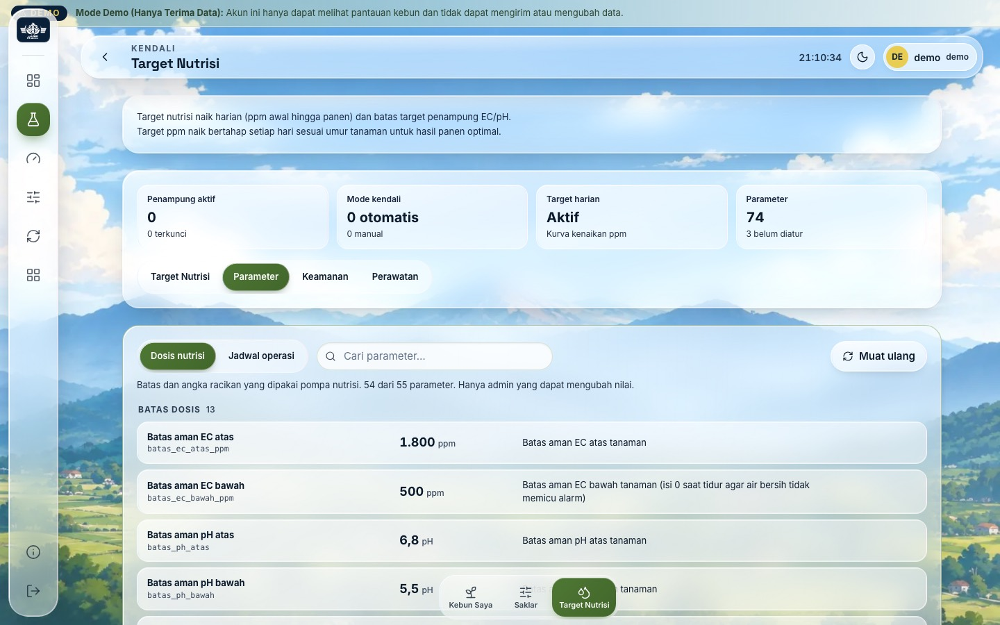
Penting. Parameter keselamatan yang tidak berstatus SIAP (nilai sah dan tervalidasi) membuat fitur yang memakainya ditolak. Jangan mengisi angka tebakan untuk menghilangkan tanda "belum diatur".
Target tiap penampung (pemilihan preset): setiap penampung memakai mode Otomatis (target EC/pH diambil dari preset yang cocok dengan tanaman, tahap, dan umur batch yang berjalan) atau Target manual (admin mengisi sendiri). Tombol Sinkronkan sekarang menghitung ulang target semua penampung Otomatis dari preset aktif. Hasilnya target saja, bukan perintah pompa.
Pengelolaan template preset: formulir "Tambah preset nutrisi" (komponen PresetNutrisi) ada di kode tetapi tidak dipasang di halaman mana pun saat audit. Preset bervesi untuk siklus baru (/api/preset) hanya tersedia lewat API. Status: BELUM DIIMPLEMENTASIKAN di antarmuka.
10. Saklar
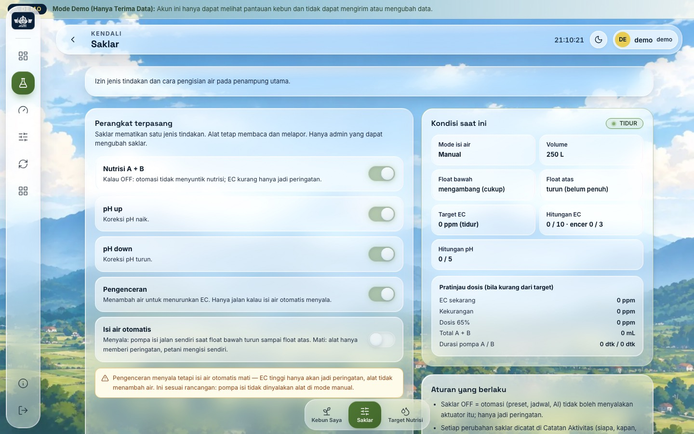
| Butir | Uraian |
|---|---|
| Fungsi | Izin per jenis tindakan: Nutrisi A + B, pH up, pH down, Pengenceran, Isi air otomatis |
| Hak | Hanya admin |
| Arti OFF | Otomasi (preset, jadwal, AI) tidak boleh menyalakan aktuator itu; hanya jadi peringatan |
Panel Kondisi saat ini menampilkan mode isi air, volume, status pelampung bawah/atas, target EC, hitungan koreksi, dan Pratinjau dosis (perhitungan saja).
Peringatan. Saklar ON tidak berarti dosing berjalan. Eksekusi dosing tetap diblokir oleh gerbang server. Setiap perubahan saklar dicatat di Catatan Aktivitas.
11. Kalibrasi
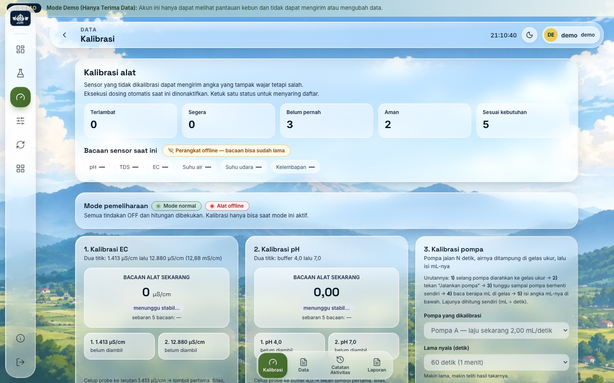
| Butir | Uraian |
|---|---|
| Fungsi | Status jadwal kalibrasi (Terlambat, Segera, Belum pernah, Aman), kalibrasi EC dua titik (1.413 dan 12.880 µS/cm), pH dua titik (buffer 4,0 dan 7,0), kalibrasi laju pompa |
| Syarat | Mode pemeliharaan aktif; alat online |
| Pelaksana | Teknisi bersama admin |
Langkah kalibrasi pH (ringkas) — rinci di SOP-02 Bab 3:
- Aktifkan Mode pemeliharaan.
- Celup probe ke buffer 4,0, tunggu "stabil", tekan tombol titik 1.
- Bilas probe dengan air suling, celup ke buffer 7,0, tunggu stabil, tekan tombol titik 2.
- Catat hasil, kembalikan ke mode normal.
Hati-hati. Menurut kode server (commit
0383c55): kalibrasi pH dua titik dikirim ke ESP32 sebagai tegangan probe (ph_v7/ph_v4) bila alat melaporkanph_volt; bila belum, server menjawab "BELUM dikirim ke alat". Kalibrasi EC dua titik hanya tersimpan di server, belum dikirim ke ESP32, walau teks di layar menyebut alat langsung mengirim. Status: BELUM TERVERIFIKASI di perangkat. Bandingkan bacaan dengan alat ukur pembanding setelah kalibrasi.
Kalibrasi pompa: jalankan pompa N detik ke gelas ukur, isi mL hasilnya, laju dihitung otomatis. Perintah dikirim ke alat (commit 0383c55), tetapi dikunci bawaan: server menolak bila UJI_POMPA_DIIZINKAN belum diaktifkan admin server atau mode pemeliharaan tidak aktif. Uji selalu dengan air bersih.
12. Data, Laporan, dan Riwayat (Riwayat Data)
| Halaman | Fungsi | Langkah utama |
|---|---|---|
Data (/data) |
Takaran larutan hasil penakaran nyata (uji lab), dipisah tanaman dan buah | Lihat tabel; admin menambah data |
Laporan (/laporan) |
Matriks bulanan: jumlah semai, peremajaan, pendewasaan, panen, rata-rata pH | Pilih rentang (Semua, 6 Bulan, 12 Bulan, Kustom) → Terapkan → Unduh Laporan |
| Ekspor CSV (di Laporan) | Data sensor, Peringatan, Panen | Pilih jenis, tanggal Dari/Sampai → ekspor |
Catatan Aktivitas (/audit) |
Jejak setiap tambah, ubah, hapus, dan masuk | Klik baris untuk detail sebelum/sesudah |
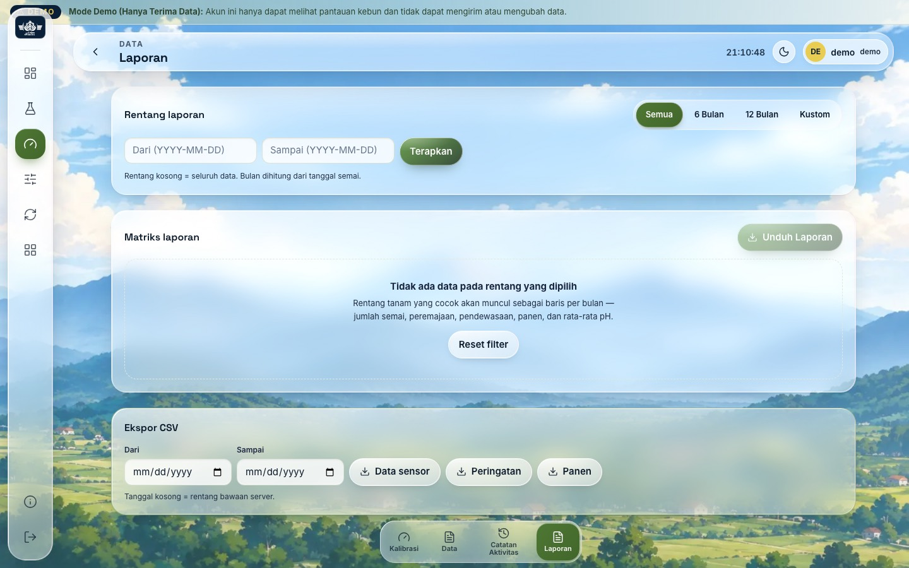
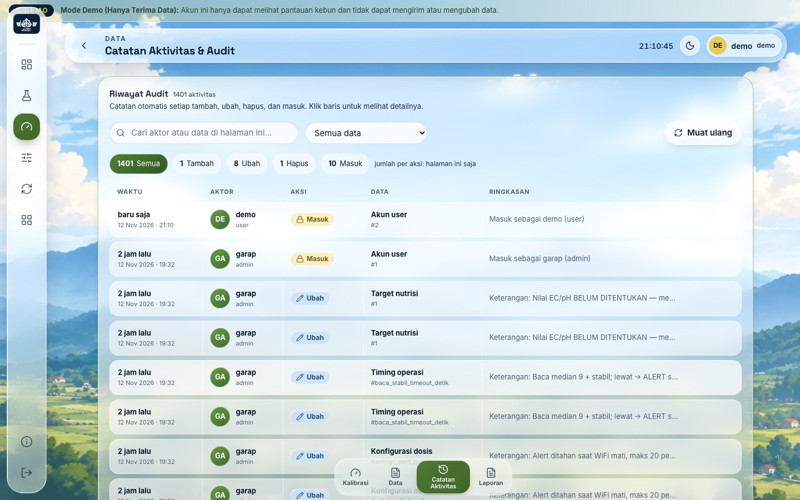
13. Master Data (Tanaman, Meja/Tandon, Ambang)
| Halaman | Fungsi | Catatan |
|---|---|---|
| Jenis Tanaman | Tanaman yang ditanam beserta target awal/akhir nutrisi | Prasyarat semai |
| Meja Tanaman | Meja hidroponik, jumlah lubang, spesifikasi instalasi | Pengelolaan tandon/penampung dilakukan lewat data meja (ID meja dipakai firmware ID_MEJA) |
| Ambang Sensor | Batas aman tiap sensor; di luar rentang = tidak normal | Nilai saat audit (data pengembangan): pH 5–7, suhu air 5–40 °C, TDS 50–2.600 ppm, suhu udara 20–40 °C, kelembapan 100–100 % (perlu diperbaiki admin) |
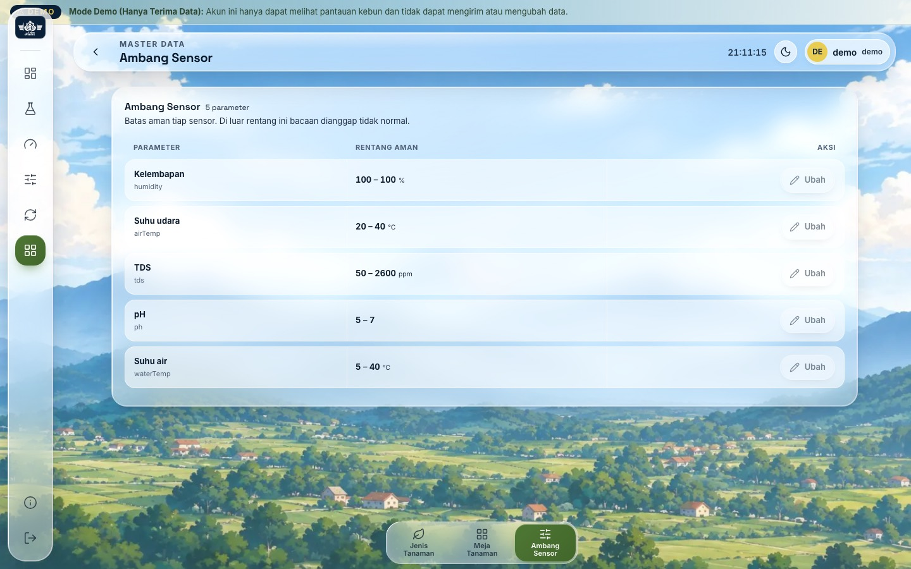
Catatan. Ambang sensor (batas peringatan) berbeda dengan batas kewajaran di server (pH 3–9, TDS 50–2.500 ppm, suhu air 5–45 °C) dan batas fisik (bacaan di luar pH 0–14, TDS 0–5.000 ppm ditolak dan tidak disimpan).
14. Sistem: Pengaturan Alat, Pemulihan Papan, Koneksi Alat
| Halaman | Fungsi | Status |
|---|---|---|
| Pengaturan Alat | Volume efektif penampung, jumlah talang, debit, waktu kerja, batas aman, laju pompa (hanya-baca; diubah dari Kalibrasi) | Pengaturan tersimpan di server |
| Pemulihan Papan | Menyiapkan paket parameter + kalibrasi untuk papan ESP32 pengganti | SEDANG DIKEMBANGKAN — paket belum dikirim ke papan |
| Koneksi Alat | Status broker, ID alat aktuator-01, kontrak topik, uji kirim pesan, jejak perintah |
Tersedia |
Catatan. Halaman Koneksi Alat menampilkan contoh topik
hidro/…dan perintah{"cmd":"dosing",…}dari rancangan v4.1. Firmware gabungan yang aktif memakai topikgarap/aktuator-01/…dan tidak menerima perintah dosing tanpa gerbang server. Contoh itu bukan instruksi untuk dijalankan.
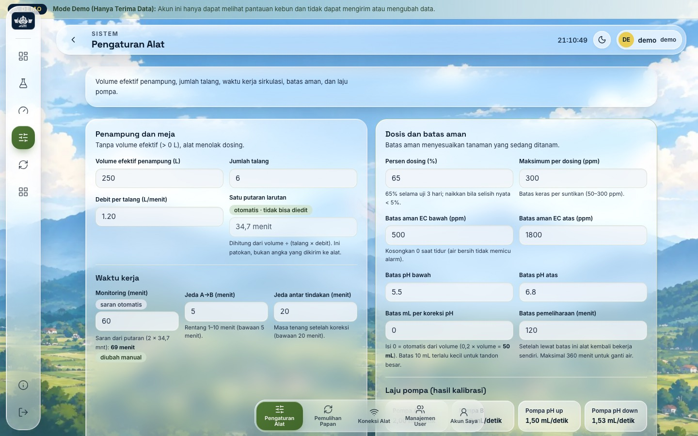
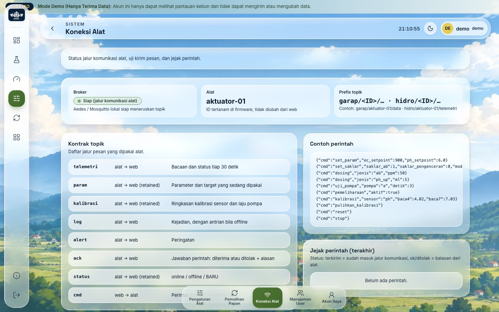
15. Manajemen User dan Akun Saya
Manajemen User (admin): cari username/email, filter level (Admin, User, Petani), Tambah User, Ubah, Hapus.
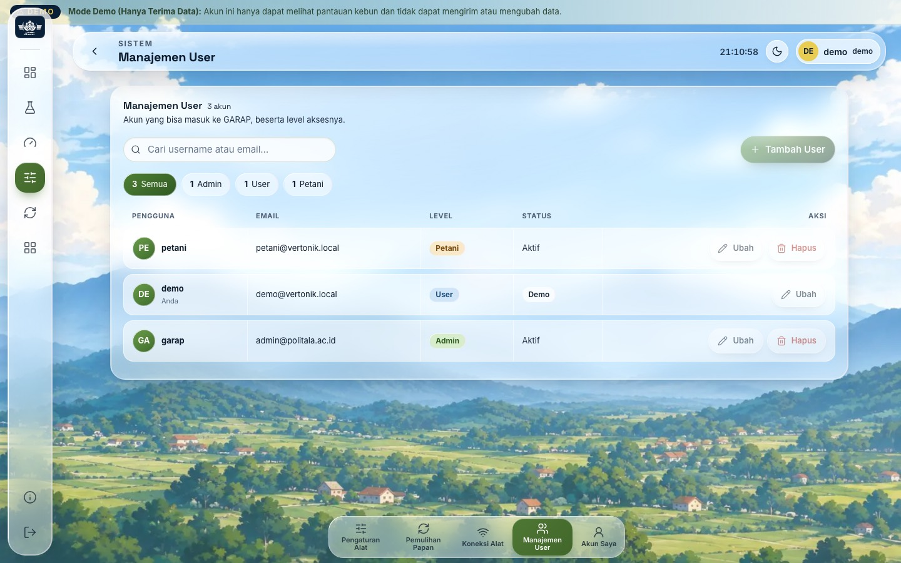
Akun Saya (semua): lihat profil dan hak akses, Ubah profil, Ganti password, Keluar, pilihan Tampilan kaca (Jernih, Standar, Pekat — pilih Pekat bila teks sulit dibaca).
16. CCTV dan Asisten AI
| Fitur | Fungsi | Batasan |
|---|---|---|
| CCTV | Melihat gambar kamera greenhouse | Perlu kamera terdaftar |
| Asisten AI | Tanya-jawab dan saran teks berbasis data sensor | Tidak bisa menyalakan pompa. Bila sensor basi atau tidak wajar, AI menyarankan periksa alat. Batas tunggu jawaban sekitar 60 detik. |
17. Tombol STOP Pompa
Tombol STOP mengirim perintah berhenti ke antrean. Server menjawab "Pompa BELUM dipastikan mati: tunggu konfirmasi aktuator, dan gunakan tombol darurat fisik bila perlu."
- Tekan STOP dan konfirmasi.
- Pastikan di panel: lampu biru padam, LCD tidak lagi menunjukkan "DOSING…/MENGISI AIR…".
- Bila pompa masih berjalan → tekan E-STOP fisik.
18. Fitur yang Belum Tersedia di Website
| Fitur | Status | Keterangan |
|---|---|---|
| Konfirmasi tandon siap, konfirmasi peremajaan H+4 (batas 24 jam), konfirmasi jumlah benih versi siklus baru | BELUM DIIMPLEMENTASIKAN di antarmuka | API backend /api/siklus, /api/konfirmasi ada; penjadwal mati secara bawaan |
| Persetujuan dosing (ajukan, setujui, tolak, cabut) | BELUM DIIMPLEMENTASIKAN di antarmuka | API /api/dosing/siklus ada |
| Eksekusi dosing | BELUM DIIZINKAN | EKSEKUSI_DIIZINKAN = false |
| Kontrol air (isi, stop, ganti mode) | TIDAK AKTIF | Server 503 kontrol_air_nonaktif; rute lama dialihkan ke Dashboard |
19. Tabel Masalah Umum
| Gejala | Kemungkinan penyebab | Tindakan |
|---|---|---|
| Halaman putih / tidak memuat | Server Pi mati atau jaringan beda | Cek Wi-Fi, hubungi admin (SOP-02 Bab 5) |
| Pesan 403 saat menyimpan | Akun demo atau hak tidak cukup | Gunakan akun yang berwenang |
| Pesan 423 | Fitur dikunci keselamatan | Normal. Jangan dicoba ulang. |
| Pesan 503 pada kontrol air | Fitur nonaktif | Normal |
| Angka sensor "—" | Alat offline | SOP-02 Bab 5 |
| Data sensor aneh (mis. pH sangat tinggi) | Probe lepas atau belum dikalibrasi | SOP-02 Bab 6 |
PETUNJUK TEKNIS (JUKNIS) PENGOPERASIAN PERANGKAT IoT GARAP
| Atribut | Isi |
|---|---|
| Nomor dokumen | GARAP-JUKNIS-02 |
| Versi | 1.0 |
| Tanggal | 12 November 2026 |
| Berlaku untuk | Papan ESP32 gabungan, firmware gabungan-0.6 (deploy-pi/firmware/gabungan/gabungan.ino), Raspberry Pi (deploy-pi/) |
| Status perangkat | BELUM TERVERIFIKASI di lapangan. Firmware v0.6 sudah di-commit (12 Nov 2026) tetapi belum di-flash dan diuji dalam audit ini. Raspberry Pi tidak terjangkau saat audit 11 November 2026. |
Penanda di dokumen ini
| Penanda | Arti |
|---|---|
| 🔧 KHUSUS TEKNISI | Hanya boleh dikerjakan teknisi IoT yang terlatih |
| ⚠️ PERINGATAN | Risiko listrik, cairan kimia, atau kerusakan tanaman |
| ⛔ BELUM DIIZINKAN | Prosedur yang tidak boleh dijalankan sampai ada keputusan pemilik |
| [PERLU VERIFIKASI] | Data tidak ditemukan di konfigurasi; cocokkan dengan perangkat nyata |
⛔ BELUM DIIZINKAN — EKSEKUSI DOSING. Server menolak setiap perintah dosis nutrisi/pH (
EKSEKUSI_DIIZINKAN = false). Juknis ini tidak berisi prosedur menjalankan dosing otomatis. Pompa A, B, pH Up, dan pH Down hanya boleh dijalankan untuk uji dengan air bersih oleh teknisi.
1. Pengenalan Perangkat
Perangkat GARAP adalah panel kontrol di dekat tandon. Isinya satu papan ESP32 gabungan yang membaca sensor dan mengendalikan pompa. ESP32 terhubung lewat Wi-Fi ke Raspberry Pi (server lokal). Operator membaca kondisi lewat LCD dan lampu pilot di panel, serta lewat website/aplikasi.
Identitas perangkat di sistem: aktuator-01 (berperan "gabungan": sensor + aktuator).
2. Fungsi Masing-Masing Komponen
| Komponen | Fungsi | Pin / alamat (firmware) | Status |
|---|---|---|---|
| ESP32 Dev Module | Otak panel: baca sensor, kirim data, jalankan perintah aman | — | Ada |
| ADS1115 | Mengubah tegangan probe pH dan EC menjadi angka | I2C 0x48, SDA 21 / SCL 22; A0 = pH, A1 = EC (pembagi 10k/10k) | Ada |
| Probe pH | Mengukur keasaman larutan | lewat ADS1115 A0 | Model [PERLU VERIFIKASI] (prompt menyebut DFRobot Gravity KB2003) |
| Probe EC/TDS | Mengukur kepekatan nutrisi | lewat ADS1115 A1 | Model [PERLU VERIFIKASI] |
| DS18B20 | Suhu air tandon | GPIO 4 | Ada |
| SHT31 | Suhu dan kelembapan udara | I2C 0x44 | Ada (bukan DHT22) |
| Pompa peristaltik A dan B | Nutrisi A dan B | GPIO 25, 26 | ⛔ dosing BELUM DIIZINKAN |
| Pompa pH Up / pH Down | Koreksi pH | GPIO 27, 18 | ⛔ dosing BELUM DIIZINKAN |
| Pompa isi air | Mengisi tandon | GPIO 16 | Kontrol dari aplikasi TIDAK AKTIF |
| Modul relay | Saklar listrik pompa 12 V (HIGH = nyala) | — | Ada |
| Pelampung bawah | Air kurang → pompa nutrisi tidak boleh jalan | GPIO 32 | Ada |
| Pelampung atas | Penuh → pompa isi berhenti; kabel putus dibaca "penuh" | GPIO 33 | Ada |
| Lampu merah / hijau / biru | Status panel | GPIO 13 / 17 / 23 (via ULN2003) | Ada |
| LCD 20x4 | Tampilan nilai dan status | I2C 0x27 | Ada |
| Tombol RESET | Tampilkan info Wi-Fi/IP di LCD 4 detik; lepas kunci E-STOP lokal bila aman | GPIO 19 | Ada di v0.6 |
| Tombol E-STOP | Memutus bus 12 V aktuator; ESP32 membaca lewat pembagi 33k/10k | GPIO 36 | Ada |
| Catu daya 12 V | Daya pompa dan relay | — | Kapasitas [PERLU VERIFIKASI] |
| Solenoid valve | — | Tidak ada di firmware aktif | [PERLU VERIFIKASI] |
| Raspberry Pi | Server API, basis data, broker MQTT, web | — | Ada |
Batas pengaman yang tertanam di firmware
| Batas | Nilai |
|---|---|
| Maks per suntikan A+B / pH | 214 mL / 10 mL |
| Maks per jam A+B / pH | 450 mL / 30 mL |
| Maks durasi pompa A, B / pH Up, pH Down / isi air | 70 detik / 12 detik / 600 detik |
| Jeda pompa A ke B | 60 detik |
| Uji pompa | maks 120 detik |
| Fail-safe tanpa detak server | 30 detik |
| Interval kirim sensor / status | 5 detik / 30 detik |
| Laju pompa awal | 0 mL/detik = belum dikalibrasi, perintah berbasis mL ditolak |
3. Arsitektur Perangkat
flowchart TB
PSU["Catu daya 12 V"] --> ES["Tombol E-STOP<br/>(memutus bus 12 V)"]
ES --> BUS["Bus 12 V aktuator"]
BUS --> REL["Modul relay"]
REL --> PA["Pompa A"] & PB["Pompa B"] & PU["pH Up"] & PD["pH Down"] & PI["Pompa isi air"]
BUS -- "pembagi 33k/10k" --> G36["ESP32 GPIO 36<br/>(baca E-STOP)"]
subgraph ESP["ESP32 gabungan"]
G36
I2C["I2C 21/22"]
OW["GPIO 4"]
FL["GPIO 32 / 33"]
OUT["GPIO 25,26,27,18,16"]
LMP["GPIO 13,17,23"]
end
I2C --- ADS["ADS1115<br/>pH + EC"] & SHT["SHT31"] & LCD["LCD 20x4"]
OW --- DS["DS18B20"]
FL --- FB["Pelampung bawah/atas"]
OUT --> REL
LMP --> LAMP["Lampu merah/hijau/biru"]4. Diagram Koneksi Sistem
flowchart LR ESP["ESP32 aktuator-01"] -- "Wi-Fi 2,4 GHz" --> AP["Router/modem<br/>atau hotspot Pi"] AP --> PI["Raspberry Pi"] ESP -- "MQTT :1883<br/>garap/aktuator-01/data, status, hasil" --> PI PI -- "garap/server/status (detak)<br/>garap/aktuator-01/perintah, ack" --> ESP ESP -. "cadangan HTTP :80<br/>/api/device/v1/sensor, heartbeat" .-> PI PI -- "HTTPS :443" --> USR["Website / Mobile"]
Cara ESP32 menemukan server: nama mDNS garap.local, vertonik.local, vertonic.local; pemindaian subnet umum (192.168.8.x, 192.168.100.x, 192.168.1.x, 192.168.0.x, 172.20.10.x); IP cadangan SERVER_IP di rahasia.h; alamat hotspot Pi 10.42.0.1; atau IP yang disimpan teknisi lewat Serial. Alamat IP Pi di greenhouse: [PERLU VERIFIKASI] (audit 11 Nov 2026 mencoba 192.168.1.172, tidak terjangkau).
Wi-Fi yang dicoba (dari rahasia.h.contoh): VertonikModem, Pokjar Permata, Biruni, Rumah Permata, WALAWE, Vertoniksmartfarm (hotspot Pi). Daftar aktual di rahasia.h lapangan [PERLU VERIFIKASI]. Hanya Wi-Fi 2,4 GHz.
5. Persiapan Sebelum Menyalakan Perangkat
- Lantai sekitar panel kering; tangan kering.
- Panel tertutup; tidak ada kabel terkelupas atau terendam.
- Tombol E-STOP mudah dijangkau dan dalam posisi lepas (tidak tertekan).
- Tandon berisi air sampai di atas pelampung bawah.
- Probe pH dan EC terendam; tutup penyimpanan probe pH sudah dilepas.
- Selang pompa nutrisi/pH tidak bocor dan tidak tertekuk.
- Raspberry Pi menyala (lampu daya Pi menyala).
- Router/modem Wi-Fi menyala.
🔧 KHUSUS TEKNISI (instalasi pertama atau setelah perbaikan):
- Kabel dicocokkan dengan peta pin Bab 2.
- Multimeter: tidak ada hubung singkat 12 V–GND dan 3,3 V–GND.
- Pembagi tegangan 33k/10k terpasang di GPIO 36. Tanpa pembagi, pin terbaca "E-STOP ditekan" dan semua pompa terkunci.
-
AKTIFKAN_BACA_ESTOPtidak diubah ke 0 (nilai 0 hanya untuk meja uji tanpa pompa). - Pompa 12 V lewat relay + dioda flyback, tidak mengambil daya dari pin ESP32.
6. Prosedur Menyalakan Perangkat
- Nyalakan Raspberry Pi. Tunggu sekitar 2 menit.
- Nyalakan catu daya panel.
- Perhatikan LCD. Urutan normal:
WIFI MATI→ mencari Wi-Fi.TUNGGU SERVER...→ Wi-Fi tersambung, menunggu detak server.PENAMPUNG CUKUP/PENAMPUNG KURANG/PENAMPUNG PENUH→ siap.
- Perhatikan lampu:
| Lampu | Arti |
|---|---|
| Hijau saja | Normal |
| Merah + hijau bersamaan | Peringatan: server belum tersambung, MQTT putus, atau air kurang |
| Merah saja | E-STOP aktif |
| Biru menyala | Ada pompa yang sedang bekerja |
- Buka website → Dashboard. Label harus Alat tersambung dan angka berubah.
7. Prosedur Menghubungkan Perangkat ke Jaringan
Cara operator: tekan tombol RESET sekali. LCD menampilkan selama 4 detik:
WIFI:<nama Wi-Fi>
ESP :<IP ESP32>
SRV :<IP server>
MODE: MQTT AKTIF / HTTP (NO MQTT) / MENUNGGU...Catat isinya dan laporkan ke teknisi bila tidak MQTT AKTIF.
🔧 KHUSUS TEKNISI — menambah Wi-Fi atau IP server tanpa compile ulang:
- Sambungkan ESP32 ke laptop dengan kabel USB, buka Serial Monitor 115200 baud.
- Perintah yang tersedia:
status,scan,cari,baca,wifi <SSID>|<SANDI>,server <IP>,help. - Ketik
scanuntuk melihat Wi-Fi 2,4 GHz sekitar. - Ketik
wifi NAMA|SANDIuntuk menyimpan Wi-Fi baru (tersimpan permanen di NVS). - Ketik
server <IP Pi>bila server tidak ditemukan otomatis. - Ketik
statusuntuk memastikan.
⚠️ Jangan menuliskan sandi Wi-Fi di kertas yang ditempel di panel atau di dokumen umum.
8. Pemeriksaan Koneksi MQTT
| Cara | Langkah | Normal |
|---|---|---|
| LCD | Tekan RESET | MODE: MQTT AKTIF |
| Website | SISTEM → Koneksi Alat | Broker siap; alat aktuator-01 |
| Serial 🔧 | ketik status |
MQTT=OK |
| Pi 🔧 | sudo bash /opt/vertonik/deploy-pi/status-server.sh |
Layanan vertonik-api, postgresql, nginx aktif |
Bila LCD menunjukkan HTTP SENSOR ONLY: port MQTT 1883 diblokir. Data sensor tetap masuk lewat HTTP, tetapi semua pompa tetap terkunci oleh fail-safe. Laporkan ke teknisi.
Topik MQTT (deploy-pi/mosquitto/garap.acl):
| Topik | Arah | Isi |
|---|---|---|
garap/aktuator-01/data |
ESP32 → Pi | Bacaan sensor tiap 5 detik |
garap/aktuator-01/status |
ESP32 → Pi | Status tiap 30 detik (retained, LWT) |
garap/aktuator-01/hasil |
ESP32 → Pi | Hasil perintah, diulang sampai di-ack |
garap/aktuator-01/perintah |
Pi → ESP32 | Perintah (STOP, STOP_DARURAT, uji, kalibrasi) |
garap/aktuator-01/ack |
Pi → ESP32 | Tanda terima hasil |
garap/server/status |
Pi → ESP32 | Detak server {online, estop} |
9. Pemeriksaan Pembacaan Sensor
Bandingkan LCD, website (Sensor), dan alat ukur pembanding.
| Sensor | Tampilan LCD | Lulus bila (selisih terhadap pembanding) |
|---|---|---|
| EC/TDS | baris 1 EC x.xxmS xxxxppm |
≤ 5 % setelah kalibrasi (larutan 1.413 µS/cm) |
| pH | baris 2 pH x.xx |
≤ 0,1 setelah kalibrasi (buffer 4,0 dan 7,0) |
| Suhu air | baris 2 Air xx.xC |
≤ 0,5 °C |
| Suhu/RH ruang | baris 3 Ruang xxC RH xx% |
≤ 2 °C, ≤ 5 % RH |
Tanda pH --.-- atau EC ---- = probe tidak terbaca (lepas/rusak). Website juga tidak menampilkan angka baru untuk sensor itu.
Batas yang dipakai server
| Jenis | Nilai | Akibat |
|---|---|---|
| Batas fisik | pH 0–14, TDS 0–5.000 ppm, suhu −50–80 °C, RH 0–100 % | Di luar ini ditolak, tidak disimpan |
| Batas kewajaran | pH 3–9, TDS 50–2.500 ppm, suhu air 5–45 °C | Disimpan tetapi ditandai tidak wajar; AI menyarankan periksa alat |
| Bacaan basi | lebih dari 120 detik | Ditandai basi |
10. Pemeriksaan Aktuator
🔧 KHUSUS TEKNISI. Operator tidak menjalankan pompa.
⚠️ PERINGATAN: Semua uji pompa memakai air bersih. Selang keluaran ke gelas ukur, bukan ke tandon tanaman. Satu orang berjaga di tombol E-STOP.
10.1 Uji masukan pengaman (pompa tanpa daya)
| Uji | Cara | Lulus bila |
|---|---|---|
| Pelampung bawah | Turunkan dengan tangan | LCD PENAMPUNG KURANG, lampu merah + hijau |
| Pelampung atas | Angkat | LCD PENAMPUNG PENUH |
| Kabel pelampung atas putus | Cabut | Terbaca penuh |
| E-STOP | Tekan | LCD E-STOP AKTIF!, lampu merah saja |
10.2 Uji pompa satu per satu (air bersih)
Uji pompa dari aplikasi (halaman Kalibrasi) dikunci bawaan: server hanya menerimanya dari admin bila admin server mengaktifkan UJI_POMPA_DIIZINKAN=1 dan mode pemeliharaan aktif. Bila belum, uji ditunda.
- Aktifkan mode pemeliharaan (halaman Kalibrasi).
- Jalankan uji pompa A selama 5 detik.
- Pastikan hanya pompa A berputar, lampu biru menyala, LCD
DOSING A..., lalu berhenti sendiri. - Ulangi untuk B, pH Up, pH Down, isi air.
- Pompa yang salah berputar = kabel relay tertukar. Perbaiki kabel, jangan ubah kode.
10.3 Uji pengaman saat pompa berjalan (air bersih)
| Uji | Lulus bila |
|---|---|
| Tekan E-STOP saat pompa jalan | Pompa berhenti seketika |
| Matikan layanan API di Pi | Pompa berhenti ≤ 30 detik |
| Matikan Wi-Fi | Pompa berhenti ≤ 30 detik |
| Turunkan pelampung bawah saat pompa nutrisi jalan | Berhenti, alasan air_kurang_float_bawah |
| Angkat pelampung atas saat isi air | Berhenti, alasan tandon_penuh |
| Cabut daya ESP32 saat pompa jalan | Pompa berhenti. Bila tetap jalan: hentikan pemakaian, perbaiki wiring relay |
Bila satu baris gagal, perangkat tidak boleh dipasang ke tandon tanaman.
11. Monitoring Kondisi Perangkat
| Pesan LCD baris 4 | Arti | Tindakan operator |
|---|---|---|
PENAMPUNG CUKUP |
Normal | — |
PENAMPUNG KURANG |
Pelampung bawah turun | Tambah air sesuai SOP |
PENAMPUNG PENUH |
Pelampung atas naik | Hentikan pengisian manual |
MENGISI AIR... |
Pompa isi bekerja | Awasi |
DOSING A..., DOSING B..., pH UP..., pH DOWN... |
Pompa penakar bekerja | Hanya boleh saat uji teknisi. Di luar itu: tekan E-STOP, laporkan |
TUNGGU SERVER... |
Belum ada detak server | SOP-02 Bab 5 |
WIFI MATI |
Wi-Fi putus | SOP-02 Bab 5 |
HTTP SENSOR ONLY |
MQTT diblokir | Laporkan teknisi |
E-STOP AKTIF! |
Darurat aktif | Lihat Bab 13 |
12. Prosedur Mematikan Perangkat
- Pastikan tidak ada pompa bekerja (lampu biru padam).
- Tekan STOP di aplikasi bila ada pekerjaan; tunggu konfirmasi.
- Matikan catu daya panel.
- Bila Pi juga dimatikan 🔧:
sudo shutdown -h nowlewat SSH, tunggu lampu aktivitas Pi padam, baru cabut daya. Jangan cabut daya Pi langsung (risiko basis data rusak). - Catat waktu dan alasan di buku log.
13. Prosedur Restart
| Situasi | Langkah |
|---|---|
| ESP32 macet (LCD membeku) | Matikan daya panel 10 detik, nyalakan lagi. ESP32 juga punya watchdog yang me-reset otomatis. Saat boot semua output OFF lebih dulu. |
| Setelah E-STOP | 1) Periksa dan atasi penyebab. 2) Putar/lepas tombol E-STOP. 3) Bila E-STOP juga aktif di server (dari aplikasi atau perintah STOP_DARURAT), admin mereset E-STOP di server. 4) Kunci E-STOP lokal lepas sendiri bila tombol lepas, server sudah reset, dan detak server segar; atau tekan RESET. |
| Layanan API Pi 🔧 | sudo systemctl restart vertonik-api lalu cek status-server.sh |
| Pi seluruhnya 🔧 | sudo reboot |
14. Troubleshooting
| Gejala | Penyebab mungkin | Tindakan |
|---|---|---|
| LCD mati | Daya panel atau ESP32 mati | Cek steker/sekring; 🔧 cek catu daya |
LCD WIFI MATI lama |
Router mati, sandi berubah, Wi-Fi 5 GHz | Cek router; 🔧 scan, `wifi SSID |
LCD TUNGGU SERVER... |
Pi mati, IP berubah, layanan API mati | Cek Pi; 🔧 server <IP>, status-server.sh |
HTTP SENSOR ONLY |
Port 1883 diblokir | 🔧 buka port di router/ufw |
| Lampu merah saja | E-STOP aktif | Bab 13 |
Semua perintah ditolak estop meski tombol lepas |
Pembagi 33k/10k GPIO 36 tidak terpasang | 🔧 pasang pembagi |
pH --.-- / EC ---- |
Probe lepas/rusak, ADS1115 tak terbaca | Cek konektor; 🔧 Serial ADS1115 TIDAK TERBACA |
| Angka pH/EC tampak wajar tapi beda dari pembanding | Belum dikalibrasi | SOP-02 Bab 3 |
| Pompa tidak jalan saat uji | Laju belum dikalibrasi (belum_dikalibrasi), E-STOP, air kurang, server hilang |
Lihat alasan di Koneksi Alat |
| Pompa jalan sendiri tanpa uji | Gangguan berbahaya | Tekan E-STOP, matikan daya, laporkan |
15. Pemeliharaan Berkala
| Frekuensi | Kegiatan | Pelaksana |
|---|---|---|
| Harian | Cek LCD, lampu, kebocoran, level tandon | Operator |
| Mingguan | Bilas probe pH/EC dengan air suling; cek selang pompa; cek kabel dan konektor dari korosi | Teknisi |
| Bulanan | Kalibrasi pH dua titik dan EC; uji E-STOP dan pelampung; cek relay | Teknisi |
| 3 bulanan | Kalibrasi ulang laju pompa; cadangan basis data Pi | Teknisi + Admin |
| Sesuai umur pakai | Ganti probe pH | Teknisi; umur probe [PERLU VERIFIKASI] |
Rincian langkah ada di SOP Pemeliharaan dan Penanganan Gangguan (GARAP-SOP-02).
PETUNJUK TEKNIS (JUKNIS) INSTALASI DAN KONFIGURASI GARAP
| Atribut | Isi |
|---|---|
| Nomor dokumen | GARAP-JUKNIS-03 |
| Versi | 1.0 |
| Tanggal | 12 November 2026 |
| Pembaca | 🔧 KHUSUS TEKNISI dan pengelola sistem. Operator tidak menjalankan prosedur ini. |
| Sumber | deploy-pi/MULAI_DEPLOY.md, deploy-pi/PANDUAN_SERVER_PI.md, deploy-pi/PANDUAN_MQTT.md, deploy-pi/mosquitto/*, deploy-pi/systemd/vertonik-api.service, deploy-pi/nginx/vertonik.conf, firmware gabungan.ino |
⛔ BELUM DIIZINKAN. Instalasi tidak boleh mengubah gerbang dosis (
EKSEKUSI_DIIZINKAN) di backend. Jangan menjalankan perintah DOSIS dari web, curl, atau Serial — server menolaknya (423) dan itu disengaja.
⚠️ Rahasia. Sandi Wi-Fi, API key perangkat, dan akun awal tersimpan di berkas lokal (
*.lokal,rahasia.h,/etc/vertonik/*.txt). Jangan menyalinnya ke dokumen, chat, atau repository.
1. Komponen Perangkat Lunak di Raspberry Pi
| Layanan | Fungsi | Port | Berkas |
|---|---|---|---|
vertonik-api (Node.js) |
API GARAP | 127.0.0.1:8000 | systemd/vertonik-api.service, WorkingDirectory=/opt/vertonik/backend |
| PostgreSQL | Basis data | lokal | — |
| Mosquitto | Broker MQTT | 1883 (semua antarmuka), tanpa anonim | mosquitto/garap.conf, garap.acl |
| nginx | Web + reverse proxy | 80 (hanya /api/device/ dan alih ke HTTPS), 443 |
nginx/vertonik.conf, server_name garap.local vertonik.local |
| Ollama | Asisten AI lokal (saran saja) | lokal | ollama/Modelfile.garap |
| fail2ban | Pengaman login SSH | — | dicek oleh status-server.sh |
Spesifikasi Pi (model, RAM, kapasitas SD): [PERLU VERIFIKASI]. Panduan lama menyebut Raspberry Pi 4/5 dengan Raspberry Pi OS Lite 64-bit.
2. Alur Instalasi
flowchart TD A["Tulis Raspberry Pi OS Lite 64-bit<br/>ke SD card"] --> B["Jalankan siapkan-sd.sh<br/>(Wi-Fi dibaca dari wifi.lokal)"] B --> C["Pasang SD, nyalakan Pi<br/>instalasi otomatis 10–25 menit"] C --> D["Ambil rahasia:<br/>/etc/vertonik/kunci-perangkat.txt<br/>/etc/vertonik/akun-awal.txt"] D --> E["Tetapkan IP tetap Pi<br/>(reservasi DHCP router)"] E --> F["Verifikasi: status-server.sh"] F --> G["Siapkan rahasia.h ESP32<br/>flash firmware gabungan"] G --> H["Uji bertahap<br/>Juknis IoT Bab 9–10"]
3. Langkah Instalasi Raspberry Pi (Jalur SD card baru)
- Buka Raspberry Pi Imager → pilih perangkat → Raspberry Pi OS Lite (64-bit) → pilih SD card dengan hati-hati → Write. Pada pertanyaan OS customisation, pilih No/Skip.
- Cabut dan pasang lagi SD card agar volume
bootfsmuncul. - Di folder proyek:
bash deploy-pi/siapkan-sd.sh. - Pasang SD ke Pi, sambungkan kabel LAN bila ada, nyalakan. Tunggu 10–25 menit.
- Pantau:
ssh <user>@vertonik.local 'sudo tail -f /var/log/vertonik-install.log'. - Ambil rahasia hasil instalasi dari
/etc/vertonik/dan simpan di tempat aman. - Tetapkan IP tetap: reservasi DHCP di router (disarankan), atau
sudo bash pasang-server.sh --ip-statis <IP>/24 --gateway <GW>.
Jalur B (Pi sudah ber-OS dan bisa SSH): lihat deploy-pi/MULAI_DEPLOY.md Bab 3.
4. Verifikasi Server
| Uji | Perintah / cara | Hasil normal |
|---|---|---|
| Layanan | sudo bash /opt/vertonik/deploy-pi/status-server.sh |
vertonik-api, postgresql, nginx, fail2ban, ollama = active |
| Web | Browser ke https://<ip-pi>/ |
Halaman GARAP |
| Pengaman perangkat | curl http://<ip-pi>/api/device/v1/ambang tanpa kunci |
403 |
| Broker | Koneksi anonim ke 1883 | Ditolak |
| Wi-Fi client isolation | ping <ip-pi> dari laptop di Wi-Fi yang sama |
Berhasil. Bila gagal: matikan isolasi di router atau pakai hotspot Pi (Vertoniksmartfarm, Pi = 10.42.0.1) |
5. Konfigurasi MQTT
deploy-pi/mosquitto/garap.conf:
| Kunci | Nilai |
|---|---|
listener |
1883 0.0.0.0 |
allow_anonymous |
false |
password_file |
/etc/mosquitto/garap.passwd |
acl_file |
/etc/mosquitto/garap.acl |
max_packet_size |
4096 |
max_queued_messages |
100 |
Pengguna MQTT dan hak topik (ACL): garap-api (backend), sensor-01 (rancangan dua papan), aktuator-01 (papan gabungan: tulis data, status, hasil; baca perintah, ack, garap/server/status). Backend memeriksa ulang peran dan API key setiap pesan.
Variabel backend (.env, nilai tidak dicantumkan): MQTT_URL, MQTT_USER, MQTT_PASS. Kosong = jembatan MQTT mati, HTTP tetap jalan.
6. Konfigurasi Backend yang Berkaitan dengan Keselamatan
| Variabel / konstanta | Nilai bawaan | Arti | Boleh diubah teknisi? |
|---|---|---|---|
EKSEKUSI_DIIZINKAN (kode, gerbangDosis.js) |
false |
Gerbang eksekusi dosis | ⛔ Tidak. Hanya lewat perubahan kode + review + keputusan pemilik |
UJI_POMPA_DIIZINKAN (.env) |
tidak diisi = mati | Izin uji/kalibrasi pompa dari aplikasi (perintah UJI_POMPA dan laju pompa dikirim ke alat; hanya admin, wajib mode pemeliharaan) |
Hanya admin server, untuk sesi uji air bersih, lalu dimatikan lagi |
SIKLUS_PENJADWAL (.env) |
tidak diisi = mati | Penjadwal konfirmasi siklus budidaya | Belum ada antarmukanya; biarkan mati |
Variabel OTOMASI* |
dihapus | Pengendali dosis lama | Tidak dibaca lagi |
7. Konfigurasi dan Flash Firmware ESP32
- Salin
deploy-pi/firmware/gabungan/rahasia.h.contoh→rahasia.h(berkas ini diabaikan git). - Isi:
| Kunci | Isi |
|---|---|
WIFI_JARINGAN |
Daftar Wi-Fi 2,4 GHz dan sandinya |
SERVER_IP |
IP Pi cadangan bila mDNS dan pemindaian gagal |
ID_MEJA |
ID meja/penampung dari menu Meja Tanaman (0 = bacaan umum) |
API_KEY_AKTUATOR |
Baris aktuator-01 dari /etc/vertonik/kunci-perangkat.txt |
AKTIFKAN_BACA_ESTOP |
Biarkan 1 di lapangan. 0 hanya untuk meja uji tanpa pompa. |
- Arduino IDE: board ESP32 Dev Module; pustaka ArduinoJson 7.x, PubSubClient 2.8, OneWire, DallasTemperature, Adafruit SHT31 (+ Adafruit BusIO).
- Upload, buka Serial Monitor 115200. Pastikan muncul
ADS1115 ada, SHT31 ada, LCD adadan koneksi MQTT berhasil.
⚠️ Koreksi panduan lama.
MULAI_DEPLOY.mddanPANDUAN_SERVER_PI.mdmenyuruh "jumper GPIO13 ke GND" bila E-STOP belum dipasang. Pada firmware gabungan, GPIO 13 adalah lampu merah; E-STOP dibaca di GPIO 36 lewat pembagi 33k/10k. Jangan ikuti instruksi lama itu. Panduan lama juga menyuruh "kirim DOSIS kecil"; perintah itu kini ditolak server dan tidak boleh dicoba.
8. Cadangan dan Pemulihan Data
Ikuti docs/BACKUP_RESTORE_PI.md. Prinsip: dump basis data ke folder cadangan, periksa berkas tidak kosong, simpan salinan di luar Pi. Jadwal cadangan: minimal bulanan dan sebelum pembaruan.
9. Daftar Periksa Serah Terima Instalasi
- Semua layanan aktif (
status-server.sh). - IP tetap Pi tercatat: [PERLU VERIFIKASI].
- Sandi bawaan akun Pi dan aplikasi sudah diganti (risiko P1 di audit 11 Nov 2026).
- ESP32 tersambung, LCD
MODE: MQTT AKTIF. - Uji Juknis IoT Bab 9 (sensor) dan 10.1 (pengaman) lulus.
-
EKSEKUSI_DIIZINKANtetapfalse. - Cadangan basis data pertama dibuat.
STANDAR OPERASIONAL PROSEDUR (SOP) PENGOPERASIAN SISTEM GARAP
| Atribut | Isi |
|---|---|
| Nomor dokumen | GARAP-SOP-01 |
| Versi | 1.0 |
| Tanggal berlaku | 12 November 2026 (setelah disahkan) |
| Acuan | Juknas GARAP-JUKNAS-01, Juknis Website GARAP-JUKNIS-01, Juknis IoT GARAP-JUKNIS-02 |
| Disusun | Tim Dokumentasi GARAP |
| Disahkan | [PERLU VERIFIKASI] |
⛔ DOSING OTOMATIS: BELUM DIIZINKAN. Persetujuan dosing dan eksekusi dosing adalah dua hal berbeda. Persetujuan = operator mengizinkan cakupan dosis di aplikasi. Eksekusi = pompa benar-benar menyuntik larutan. Saat ini eksekusi diblokir oleh server, dan antarmuka persetujuan pun belum tersedia. Nutrisi diberikan manual sesuai SOP 5.
Daftar SOP dalam dokumen ini
| Kode | Judul |
|---|---|
| SOP 1 | Pemeriksaan sebelum pengoperasian (harian) |
| SOP 2 | Pengoperasian normal dan pemantauan |
| SOP 3 | Pencatatan tahap tanam (semai sampai panen) |
| SOP 4 | Pemeriksaan kualitas data |
| SOP 5 | Pemberian nutrisi dan koreksi pH manual |
| SOP 6 | Alur operasional siklus dan dosing (rujukan, belum aktif) |
| SOP 7 | Penghentian darurat |
SOP 1. Pemeriksaan Sebelum Pengoperasian (Harian)
| Unsur | Isi |
|---|---|
| Tujuan | Memastikan perangkat, tandon, dan data dalam keadaan aman sebelum kerja harian |
| Ruang lingkup | Panel kontrol, tandon, meja hidroponik, website/aplikasi |
| Penanggung jawab | Operator greenhouse |
| Peralatan | HP/laptop dengan akun GARAP, senter, lap kering, buku log, alat ukur pH/EC pembanding (bila tersedia) |
Persiapan
- Pakai alas kaki tertutup dan pastikan tangan kering.
- Bawa HP yang sudah login ke aplikasi GARAP.
Langkah kerja
- Lihat sekeliling panel: tidak ada genangan, bau terbakar, atau kabel terkelupas.
- Pastikan tombol E-STOP tidak tertekan dan mudah dijangkau.
- Baca LCD baris 4: harus
PENAMPUNG CUKUPatauPENAMPUNG PENUH. - Lihat lampu pilot: hijau saja = normal.
- Periksa level tandon secara visual dan cek kebocoran selang/sambungan.
- Periksa aliran air di meja NFT/DFT (pompa sirkulasi berjalan, talang mengalir).
- Buka Dashboard: label Alat tersambung, tidak ada pita kuning "Belum ada data".
- Buka Peringatan: catat peringatan aktif.
- Isi buku log (Lampiran A).
| Kondisi normal | Kondisi tidak normal |
|---|---|
Lampu hijau saja; LCD PENAMPUNG CUKUP; dashboard tersambung; nilai dalam ambang |
Lampu merah; LCD E-STOP AKTIF!, WIFI MATI, TUNGGU SERVER..., PENAMPUNG KURANG; dashboard offline; peringatan merah |
Tindakan bila tidak normal: ikuti SOP-02 sesuai gejala. Jangan menyalakan atau menguji pompa.
Tindakan darurat: ada asap, percikan, bau terbakar, atau air mengenai panel → tekan E-STOP, jauhi panel, matikan daya utama dari luar area basah bila aman, hubungi teknisi.
Dokumentasi: isi Lampiran A (tanggal, jam, nama, status lampu, LCD, peringatan, tindakan).
SOP 2. Pengoperasian Normal dan Pemantauan
| Unsur | Isi |
|---|---|
| Tujuan | Memantau kondisi larutan dan udara sepanjang hari |
| Penanggung jawab | Operator; admin memantau |
| Peralatan | Aplikasi mobile/website |
Langkah kerja
- Aktifkan notifikasi aplikasi mobile. Aplikasi memeriksa peringatan baru tiap 60 detik.
- Buka Dashboard minimal 3 kali sehari (pagi, siang, sore) dan saat ada notifikasi.
- Bandingkan nilai dengan batas aman di kartu (pH, suhu air, TDS, suhu udara, kelembapan).
- Bila ada peringatan: baca kode dan penjelasannya, lakukan tindakan sesuai SOP-02, catat di log.
- Admin menandai peringatan selesai setelah penyebabnya ditangani.
- Akhir hari: unduh atau periksa ringkasan di Sensor bila diminta pengelola.
| Kondisi normal | Kondisi tidak normal |
|---|---|
| Nilai dalam ambang; data diperbarui (tidak basi) | Nilai di luar ambang; tanda "bacaan terakhir"/offline; peringatan merah/kuning |
Dokumentasi: catatan peringatan dan tindakan di buku log; peringatan yang ditangani tercatat di sistem.
SOP 3. Pencatatan Tahap Tanam (Semai sampai Panen)
| Unsur | Isi |
|---|---|
| Tujuan | Data tanam lengkap dan benar sebagai dasar laporan dan prediksi panen |
| Penanggung jawab | Operator (mobile) dan admin (web) |
| Peralatan | Aplikasi; data benih |
Persiapan: jenis tanaman dan meja sudah ada di Master Data. Target nutrisi harian tanaman sudah diatur admin.
Langkah kerja
- Mulai semai: Kebun Saya → Mulai Semai Baru → pilih Tanaman, Meja tanam, isi Jumlah benih, Tanggal mulai, Keterangan → simpan.
- Pantau kartu batch (hari ke-, perkiraan selesai).
- Saat tahap selesai, hitung tanaman yang berhasil.
- Selesaikan tahap: isi jumlah berhasil. Sistem menghitung yang gagal dan membuat tahap berikutnya (Semai → Peremajaan → Pendewasaan → Panen).
- Bila semua gagal, isi 0. Tahap tercatat gagal.
- Saat panen, catat hasil panen di tahap Panen.
| Kondisi normal | Kondisi tidak normal |
|---|---|
| Jumlah berhasil + gagal = jumlah masuk; tahap berikutnya muncul | Jumlah berhasil melebihi jumlah masuk (ditolak); tahap berikutnya tidak muncul |
Dokumentasi: foto bibit (opsional), catatan jumlah di buku log; data tersimpan otomatis di Catatan Aktivitas.
SOP 4. Pemeriksaan Kualitas Data
| Unsur | Isi |
|---|---|
| Tujuan | Memastikan angka di layar dapat dipercaya sebelum dipakai mengambil keputusan |
| Penanggung jawab | Operator (harian), teknisi (mingguan) |
| Peralatan | Alat ukur pH dan EC pembanding, termometer |
Langkah kerja
- Pastikan bacaan segar: tidak ada tanda "bacaan terakhir" atau "perangkat offline" (server menandai basi bila lebih dari 120 detik).
- Bandingkan angka LCD dengan website. Harus sama (selisih pembulatan saja).
- Ambil sampel air tandon, ukur dengan alat pembanding.
- Hitung selisih: pH ≤ 0,1; EC ≤ 5 %; suhu air ≤ 0,5 °C.
- Periksa riwayat Sensor 24 jam: tidak ada lonjakan tiba-tiba yang tidak masuk akal, tidak ada celah data lebih dari 2 menit.
| Kondisi normal | Kondisi tidak normal |
|---|---|
| Selisih dalam batas; grafik halus | Selisih melebihi batas → kalibrasi (SOP-02 Bab 3); lonjakan/angka mustahil → SOP-02 Bab 6; celah data → SOP-02 Bab 5 |
Dokumentasi: Lampiran B (lembar banding sensor).
SOP 5. Pemberian Nutrisi dan Koreksi pH Manual
| Unsur | Isi |
|---|---|
| Tujuan | Menjaga larutan pada target selama dosing otomatis belum diizinkan |
| Penanggung jawab | Operator; disetujui pengawas/admin |
| Peralatan | Nutrisi A dan B, pH Up/pH Down, gelas ukur, pengaduk, sarung tangan, kacamata pelindung, alat ukur pembanding |
⚠️ Larutan pH dan nutrisi pekat bersifat korosif/iritan. Gunakan sarung tangan dan kacamata. Jangan mencampur pH Up dengan pH Down secara langsung. Jangan memakai bahan dapur (cuka, soda kue) sebagai pengganti.
Persiapan
- Baca target di Target Nutrisi (target harian ppm dan batas pH penampung).
- Pastikan bacaan sensor segar dan sudah dibandingkan dengan alat pembanding (SOP 4).
- Volume tandon diketahui. Volume aktual tandon: [PERLU VERIFIKASI] (rencana 3.000 L; data pengembangan 250 L).
Langkah kerja
- Hitung kebutuhan sesuai takaran yang ditetapkan pengelola/agronom dan data Data (uji lab). Dokumen ini tidak menetapkan takaran. [PERLU VERIFIKASI: tabel takaran resmi]
- Tuang nutrisi A sedikit demi sedikit, aduk/biarkan sirkulasi. Tunggu jeda, lalu tuang B. Jangan mencampur A dan B pekat langsung.
- Tunggu larutan tercampur (sirkulasi beberapa menit), lalu ukur ulang.
- Koreksi pH dengan jumlah kecil, tunggu tercampur, ukur ulang. Ulangi sampai dalam batas.
- Catat jumlah yang ditambahkan, nilai sebelum dan sesudah.
| Kondisi normal | Kondisi tidak normal |
|---|---|
| Nilai mendekati target secara bertahap | Nilai melonjak/turun jauh melebihi perkiraan → hentikan penambahan, ukur ulang dengan alat pembanding, lapor admin |
Dokumentasi: Lampiran C (log pemberian nutrisi manual).
SOP 6. Alur Operasional Siklus dan Dosing (Rujukan — Belum Aktif)
⛔ BELUM DIIZINKAN. Bab ini menjelaskan alur yang sudah dibangun di server agar pengelola memahami rancangannya. Antarmuka (tombol) belum tersedia di website dan mobile, penjadwal mati secara bawaan, dan eksekusi dosis selalu ditolak. Operator tidak menjalankan bab ini.
6.1 Perbedaan persetujuan dan eksekusi
| Persetujuan dosing | Eksekusi dosing | |
|---|---|---|
| Arti | Operator menyetujui cakupan dosis (larutan, jumlah maksimal, masa berlaku) | Pompa menyuntik larutan ke tandon |
| Di mana | API /api/dosing/siklus/:id/setujui |
API /api/dosing/siklus/:id/jalankan |
| Status kode | Ada di server; belum ada tombol | Diblokir: selalu 423 eksekusi_diblokir karena EKSEKUSI_DIIZINKAN = false |
| Status operasional | BELUM DIIMPLEMENTASIKAN di antarmuka | BELUM DIIZINKAN |
6.2 Alur siklus budidaya (server)
stateDiagram-v2 [*] --> DRAFT: buat siklus<br/>(tanaman, meja, preset/manual,<br/>pH & TDS awal, jumlah benih) DRAFT --> TANK_PREPARATION: operator mulai persiapan TANK_PREPARATION --> WAITING_TANK_CONFIRMATION: sistem — tandon stabil<br/>dalam pita target WAITING_TANK_CONFIRMATION --> SEEDING: operator jawab SIAP<br/>(semai dimulai, jadwal H+4) WAITING_TANK_CONFIRMATION --> TANK_PREPARATION: jawab BELUM SIAP<br/>atau kedaluwarsa SEEDING --> WAITING_REJUVENATION_CONFIRMATION: sistem — 96 jam (H+4)<br/>sejak semai WAITING_REJUVENATION_CONFIRMATION --> WAITING_SEED_COUNT_CONFIRMATION: operator jawab SIAP WAITING_REJUVENATION_CONFIRMATION --> SEEDING: jawab BELUM SIAP<br/>atau tidak dijawab 24 jam WAITING_SEED_COUNT_CONFIRMATION --> GROWTH: isi berhasil/gagal<br/>(berhasil > 0, pilih meja tujuan) WAITING_SEED_COUNT_CONFIRMATION --> COMPLETED: berhasil = 0<br/>(GAGAL_SEMAI) GROWTH --> COMPLETED DRAFT --> CANCELLED GROWTH --> CANCELLED COMPLETED --> [*] CANCELLED --> [*]
6.3 Konfirmasi peremajaan H+4 dan masa tunggu 24 jam
flowchart TD
A["Semai dimulai<br/>(jumlah benih tercatat)"] --> B["Data nutrisi dikumpulkan<br/>sensor tiap 5 detik"]
B --> C{"96 jam (H+4)<br/>sudah lewat?"}
C -- belum --> B
C -- ya --> D["Sistem membuat permintaan<br/>konfirmasi peremajaan<br/>+ notifikasi operator"]
D --> E{"Dijawab dalam<br/>24 jam?"}
E -- "tidak" --> F["KEDALUWARSA<br/>bibit TIDAK dianggap siap<br/>notifikasi 'Konfirmasi terlewat'"]
F --> G["Kembali ke SEEDING<br/>jadwal ulang hanya bila<br/>ulang_konfirmasi_jam SIAP"]
E -- "BELUM SIAP" --> G
E -- "SIAP" --> H["Konfirmasi jumlah benih:<br/>berhasil + gagal = jumlah semai"]
H --> I{"berhasil > 0?"}
I -- ya --> J["Lot peremajaan dibuat<br/>di meja tujuan → GROWTH"]
I -- tidak --> K["Siklus selesai:<br/>GAGAL_SEMAI"]
G --> CParameter (tabel timing_operasi) |
Nilai di migrasi | Status |
|---|---|---|
konfirmasi_peremajaan_jam_ke |
96 jam (H+4) | Keputusan pengguna; dipakai hanya bila SIAP |
konfirmasi_peremajaan_batas_jam |
24 jam | Keputusan pengguna; dipakai hanya bila SIAP |
konfirmasi_tandon_jam |
NULL (belum diputuskan) | [PERLU VERIFIKASI] |
pengingat_konfirmasi_jam |
NULL (belum diputuskan) | [PERLU VERIFIKASI] |
ulang_konfirmasi_jam |
— | Bila tidak SIAP, tidak ada jadwal ulang otomatis; admin meminta konfirmasi lagi |
Penyesuaian setelah konfirmasi: hasil konfirmasi mengubah status siklus (lanjut, ulang, atau selesai) dan membuat lot di meja tujuan. Kode tidak mengubah target nutrisi secara otomatis berdasarkan jawaban operator. Target tetap dari preset versi yang dibekukan saat siklus dibuat, atau target manual.
6.4 Alur persetujuan dosing (server)
stateDiagram-v2
[*] --> WAITING_APPROVAL: ajukan dosing
WAITING_APPROVAL --> APPROVED: operator setujui cakupan
WAITING_APPROVAL --> REJECTED: operator tolak
WAITING_APPROVAL --> EXPIRED: masa persetujuan habis
APPROVED --> RUNNING: jalankan
note right of RUNNING
⛔ BELUM DIIZINKAN
Gerbang menolak (423).
Status tidak berubah.
end note
RUNNING --> MIXING
MIXING --> VERIFYING
VERIFYING --> SUCCESS: target tercapai
VERIFYING --> APPROVED: perlu percobaan lagi
VERIFYING --> EXHAUSTED: percobaan habis
RUNNING --> FAULT: gangguan
VERIFYING --> FAULT: kelebihan / 4x gagal
APPROVED --> CANCELLED: dicabutSyarat gerbang dosis (semua wajib, ditambah gerbang utama yang masih tertutup):
| Syarat | Alasan penolakan bila gagal |
|---|---|
| Preset ada dan TERVALIDASI | preset_tidak_ada, preset_belum_tervalidasi |
batas_operasi (TDS min/max, pH min/max) diisi dan sah |
batas_operasi_belum_ada, batas_operasi_tidak_sah |
| Bacaan ada, lengkap, segar (≤ 120 detik) | bacaan_tidak_ada, bacaan_tidak_lengkap, sensor_basi |
| Bacaan wajar dan dalam batas operasi | bacaan_tidak_wajar, di_luar_batas_operasi |
| Tiga bacaan terakhir tidak mustahil | sensor_rusak_3x → penampung wajib dikunci |
| Gerbang utama | eksekusi_dosis_diblokir (selalu, selama EKSEKUSI_DIIZINKAN = false) |
6.5 Penanganan kenaikan/penurunan parameter tidak normal
| Kejadian | Respons sistem (sesuai kode) | Tindakan operator |
|---|---|---|
| Bacaan mustahil (mis. pH 99) | Ditolak, tidak disimpan | Periksa probe (SOP-02 Bab 6) |
| Bacaan tidak wajar (pH di luar 3–9, TDS di luar 50–2.500) | Disimpan, ditandai; gerbang menolak; AI menyarankan periksa alat | Periksa probe, banding alat ukur |
| 3 bacaan mustahil berturut | Gerbang sensor_rusak_3x, penampung wajib dikunci |
Ganti/perbaiki probe; admin membuka kunci setelah diperiksa |
| Nilai di luar ambang sensor | Peringatan di web/mobile | SOP-02 Bab 6 |
| EC turun ≥ 200 ppm dan ≥ 30 % dalam 10 menit | Dicurigai air dikuras/diganti (aturan v4.1) | Konfirmasi apakah ada penggantian air |
| Hasil dosis kelebihan / 4 percobaan gagal | Siklus dosing FAULT + penampung dikunci | (Berlaku setelah dosing diizinkan) |
6.6 Notifikasi kepada operator (server)
| Kejadian | Judul notifikasi |
|---|---|
| Tandon stabil dalam pita target | "Konfirmasi tandon siap" |
| Permintaan konfirmasi belum dijawab | "Pengingat konfirmasi" (bila pengingat_konfirmasi_jam SIAP) |
| Konfirmasi tidak dijawab sampai batas | "Konfirmasi terlewat" — bibit TIDAK dianggap siap |
Notifikasi siklus ini belum tampil di antarmuka karena fiturnya belum dipasang. Peringatan sensor biasa tampil di halaman Peringatan dan notifikasi mobile.
SOP 7. Penghentian Darurat
| Unsur | Isi |
|---|---|
| Tujuan | Menghentikan semua pompa secepatnya saat bahaya |
| Penanggung jawab | Siapa pun yang melihat bahaya |
| Peralatan | Tombol E-STOP di panel |
Langkah kerja
- Tekan tombol E-STOP (tombol jamur merah).
- Pastikan lampu merah saja menyala dan LCD
E-STOP AKTIF!. - Bila ada asap/api/air di panel: jauhi panel, matikan daya utama dari tempat kering bila aman, gunakan APAR jenis yang sesuai untuk listrik [PERLU VERIFIKASI ketersediaan APAR].
- Hubungi teknisi dan admin.
- Jangan melepas E-STOP sebelum teknisi memeriksa penyebabnya.
- Pemulihan: Juknis IoT Bab 13.
Tombol STOP di aplikasi hanya mengantre perintah dan tidak menjamin pompa berhenti seketika. Dalam darurat, gunakan E-STOP fisik.
Dokumentasi: laporan kejadian (Lampiran D).
Lampiran
Lampiran A — Log Pemeriksaan Harian
| Tanggal | Jam | Petugas | Lampu | LCD baris 4 | Dashboard tersambung (Y/T) | Peringatan aktif | Tindakan | Paraf |
|---|---|---|---|---|---|---|---|---|
Lampiran B — Lembar Banding Sensor
| Tanggal | Petugas | pH sistem | pH pembanding | Selisih | EC sistem | EC pembanding | Selisih % | Suhu air sistem | Pembanding | Lulus (Y/T) |
|---|---|---|---|---|---|---|---|---|---|---|
Lampiran C — Log Pemberian Nutrisi Manual
| Tanggal/jam | Petugas | Penampung | TDS sebelum | pH sebelum | A (mL) | B (mL) | pH Up/Down (mL) | TDS sesudah | pH sesudah | Disetujui |
|---|---|---|---|---|---|---|---|---|---|---|
Lampiran D — Laporan Kejadian
| Tanggal/jam | Pelapor | Kejadian | Tindakan segera | Penyebab | Perbaikan | Ditutup oleh |
|---|---|---|---|---|---|---|
STANDAR OPERASIONAL PROSEDUR (SOP) PEMELIHARAAN DAN PENANGANAN GANGGUAN GARAP
| Atribut | Isi |
|---|---|
| Nomor dokumen | GARAP-SOP-02 |
| Versi | 1.0 |
| Tanggal berlaku | 12 November 2026 (setelah disahkan) |
| Acuan | Juknis IoT GARAP-JUKNIS-02, Juknis Instalasi GARAP-JUKNIS-03, SOP Pengoperasian GARAP-SOP-01 |
| Disahkan | [PERLU VERIFIKASI] |
⚠️ Lingkungan greenhouse lembap: listrik dan cairan berdekatan. Pekerjaan di dalam panel hanya oleh teknisi, dengan daya dimatikan. Tangan kering. Jangan menyemprot air ke panel, Pi, atau catu daya.
⛔ Dosing otomatis BELUM DIIZINKAN. Tidak ada prosedur di dokumen ini yang menjalankan dosis ke tandon tanaman. Uji pompa selalu dengan air bersih ke gelas ukur.
| Kode | Judul | Pelaksana |
|---|---|---|
| SOP 1 | Pemeliharaan berkala perangkat | Teknisi, operator |
| SOP 2 | Pembersihan dan perawatan probe | Teknisi |
| SOP 3 | Kalibrasi sensor dan laju pompa | Teknisi + admin |
| SOP 4 | Cadangan data server | Admin |
| SOP 5 | Penanganan kehilangan koneksi | Operator → teknisi |
| SOP 6 | Penanganan pembacaan sensor tidak normal | Operator → teknisi |
| SOP 7 | Penanganan gangguan pompa | Operator → teknisi |
| SOP 8 | Penanganan gangguan listrik | Operator → teknisi |
Penanda: 🔧 = khusus teknisi.
SOP 1. Pemeliharaan Berkala Perangkat
| Unsur | Isi |
|---|---|
| Tujuan | Mencegah kerusakan dan menjaga ketepatan data |
| Ruang lingkup | Panel kontrol, sensor, pompa, selang, Raspberry Pi |
| Penanggung jawab | Teknisi (operator membantu pemeriksaan visual) |
| Peralatan | Multimeter, obeng, lap kering, sikat lembut, air suling, larutan standar, sarung tangan, kacamata, buku log |
Persiapan: beri tahu admin; pastikan tidak ada pengujian lain berjalan.
Langkah kerja (daftar periksa)
| Frekuensi | Kegiatan | ✓ |
|---|---|---|
| Harian | Cek lampu, LCD, kebocoran, level tandon (SOP-01 SOP 1) | ☐ |
| Mingguan | Cek selang pompa (retak, tertekuk, bocor) | ☐ |
| Mingguan | Cek konektor sensor dan terminal dari korosi/lembap | ☐ |
| Mingguan | Bersihkan probe (SOP 2) | ☐ |
| Bulanan 🔧 | Kalibrasi pH dan EC (SOP 3) | ☐ |
| Bulanan 🔧 | Uji E-STOP, pelampung bawah/atas (Juknis IoT 10.1) | ☐ |
| Bulanan 🔧 | Cek relay (bunyi klik, tidak lengket), cek sekring | ☐ |
| Bulanan | Cadangan basis data (SOP 4) | ☐ |
| 3 bulanan 🔧 | Kalibrasi ulang laju pompa dengan air (SOP 3.3) | ☐ |
| 3 bulanan 🔧 | Cek suhu Pi (< 70 °C), ruang SD card, pembaruan keamanan | ☐ |
| Kondisi normal | Kondisi tidak normal |
|---|---|
| Semua butir lulus | Korosi, kabel rusak, relay lengket, E-STOP tidak memutus → hentikan pemakaian pompa, perbaiki dulu |
Dokumentasi: Lampiran A (log pemeliharaan).
SOP 2. Pembersihan dan Perawatan Probe
| Unsur | Isi |
|---|---|
| Tujuan | Probe pH/EC bersih agar bacaan tepat |
| Penanggung jawab | 🔧 Teknisi |
| Peralatan | Air suling, wadah bersih, tisu lembut, cairan penyimpanan probe pH [PERLU VERIFIKASI jenisnya sesuai pabrikan] |
Langkah kerja
- Beri tahu operator bahwa bacaan akan terganggu beberapa menit.
- Angkat probe dari tandon.
- Bilas dengan air suling. Jangan menggosok bola kaca probe pH; tepuk lembut dengan tisu.
- Bersihkan endapan pada probe EC dengan sikat lembut.
- Periksa kabel probe dari retak.
- Kembalikan probe ke tandon, tunggu bacaan stabil.
- Lakukan banding singkat (SOP-01 SOP 4).
Kondisi tidak normal: bola kaca pH retak, kabel terkelupas, bacaan tetap melompat setelah dibersihkan → ganti probe.
SOP 3. Kalibrasi Sensor dan Laju Pompa
| Unsur | Isi |
|---|---|
| Tujuan | Menyesuaikan sensor dan pompa dengan nilai acuan |
| Penanggung jawab | 🔧 Teknisi; admin mencatat di web |
| Peralatan | Buffer pH 4,0 dan 7,0; larutan EC 1.413 µS/cm dan 12.880 µS/cm; air suling; gelas ukur; air bersih |
⚠️ Status fitur. Menurut kode server (commit
0383c55, 12 Nov 2026): kalibrasi pH dikirim ke ESP32 sebagai tegangan probe bila alat melaporkanph_volt(firmware v0.6 perlu di-flash); kalibrasi EC belum dikirim ke ESP32 (hanya tersimpan di server). Uji/kalibrasi pompa dari aplikasi dikunci bawaan (UJI_POMPA_DIIZINKAN), hanya admin, wajib mode pemeliharaan. Semua jalur ini belum diuji di perangkat. Setelah kalibrasi, selalu bandingkan dengan alat ukur pembanding. Bila belum sesuai, kalibrasi tidak dianggap berhasil.
3.1 Kalibrasi pH (dua titik)
- Website → Kalibrasi → aktifkan Mode pemeliharaan (semua tindakan OFF, hitungan dibekukan).
- Bilas probe dengan air suling.
- Celup ke buffer 4,0. Tunggu tulisan stabil (sebaran 5 bacaan kecil). Tekan tombol titik 1.
- Bilas, celup ke buffer 7,0. Tunggu stabil. Tekan tombol titik 2.
- Kembalikan probe ke tandon, matikan mode pemeliharaan.
- Banding dengan pH meter: selisih ≤ 0,1.
3.2 Kalibrasi EC (dua titik)
- Mode pemeliharaan aktif.
- Celup probe ke larutan 1.413 µS/cm, tunggu stabil, tekan tombol titik 1.
- Bilas, celup ke 12.880 µS/cm, tunggu stabil, tekan tombol titik 2.
- Kembalikan probe, matikan mode pemeliharaan.
- Banding: selisih ≤ 5 %.
Bila hasil buruk, gunakan pilihan kembalikan kalibrasi sebelumnya (server menyimpan konstanta lama).
3.3 Kalibrasi laju pompa 🔧 (hanya bila fitur sudah diizinkan admin server)
- Isi wadah dengan air bersih. Selang keluaran ke gelas ukur. Satu orang berjaga di E-STOP.
- Isi selang sampai penuh (jalankan sebentar, buang airnya).
- Jalankan pompa selama N detik (maks 120 detik).
- Baca mL di gelas ukur, isi ke kolom. Laju = mL ÷ detik.
- Ulangi 3 kali; hasil berselisih ≤ 5 %. Simpan rata-rata.
- Ulangi untuk pompa A, B, pH Up, pH Down, isi air.
Sebelum laju tersimpan, firmware menolak perintah berbasis mL (belum_dikalibrasi). Itu disengaja.
Dokumentasi: Riwayat kalibrasi di web + Lampiran B.
SOP 4. Cadangan Data Server
| Unsur | Isi |
|---|---|
| Tujuan | Data tidak hilang bila SD card/Pi rusak |
| Penanggung jawab | Admin |
| Peralatan | Akses SSH Pi, media simpan eksternal |
Langkah kerja: ikuti docs/BACKUP_RESTORE_PI.md bagian 1.A: dump basis data ke folder cadangan, periksa berkas tidak kosong dan berisi SQL, salin ke media di luar Pi, catat tanggal. Lakukan minimal bulanan dan sebelum pembaruan sistem.
Kondisi tidak normal: berkas cadangan 0 byte atau gagal → ulangi; laporkan ke pengelola.
SOP 5. Penanganan Kehilangan Koneksi
| Unsur | Isi |
|---|---|
| Tujuan | Memulihkan aliran data dari perangkat ke server dan aplikasi |
| Penanggung jawab | Operator (langkah 1–5), teknisi (langkah 6–9) |
Gejala: dashboard "Alat terputus", pita "Belum ada data dari alat sensor", LCD WIFI MATI / TUNGGU SERVER... / HTTP SENSOR ONLY.
Keamanan bawaan: bila detak server hilang lebih dari 30 detik, ESP32 mematikan semua pompa sendiri. Kehilangan koneksi tidak membuat pompa jalan liar.
flowchart TD
A["Dashboard: alat terputus"] --> B{"LCD menyala?"}
B -- tidak --> L["SOP 8: gangguan listrik"]
B -- ya --> C["Tekan RESET, baca layar info"]
C --> D{"WIFI: (putus)?"}
D -- ya --> E["Cek router/modem menyala<br/>dan Wi-Fi 2,4 GHz aktif"]
D -- tidak --> F{"MODE: MQTT AKTIF?"}
F -- "HTTP (NO MQTT)" --> G["🔧 Port 1883 diblokir:<br/>cek router/ufw"]
F -- "MENUNGGU" --> H["Cek Pi menyala<br/>🔧 status-server.sh"]
F -- ya --> I["Cek jaringan HP/laptop<br/>ke server"]
E --> J{"Pulih ≤ 5 menit?"}
H --> J
G --> J
I --> J
J -- ya --> K["Catat di log"]
J -- tidak --> M["Hubungi teknisi"]Langkah kerja
- Periksa apakah HP/laptop Anda sendiri tersambung ke jaringan greenhouse.
- Lihat LCD dan lampu panel.
- Tekan RESET sekali; catat isi layar (WIFI, ESP, SRV, MODE).
- Periksa router/modem menyala. Bila mati, nyalakan dan tunggu 3 menit.
- Periksa Raspberry Pi menyala (lampu daya).
- 🔧 Jalankan
status-server.sh; restart layanan yang mati (sudo systemctl restart vertonik-api). - 🔧 Bila IP Pi berubah: Serial
server <IP>atau perbaiki reservasi DHCP. - 🔧 Bila Wi-Fi berganti: Serial
wifi SSID|SANDI. - 🔧 Bila client isolation: gunakan hotspot Pi (
Vertoniksmartfarm).
| Kondisi normal setelah penanganan | Masih tidak normal |
|---|---|
LCD MODE: MQTT AKTIF, dashboard tersambung |
Hubungi teknisi; selama itu ukur manual dengan alat pembanding tiap 4 jam |
Dokumentasi: Lampiran C (log gangguan): waktu mulai, waktu pulih, penyebab.
SOP 6. Penanganan Pembacaan Sensor Tidak Normal
| Unsur | Isi |
|---|---|
| Tujuan | Membedakan masalah larutan dengan masalah sensor |
| Penanggung jawab | Operator → teknisi |
| Peralatan | Alat ukur pembanding |
Gejala: nilai di luar ambang, nilai melompat-lompat, LCD pH --.-- / EC ----, peringatan, atau AI menyarankan "Periksa alat/probe sensor".
Langkah kerja
- Pastikan bacaan segar (bukan "bacaan terakhir").
- Ukur sampel tandon dengan alat pembanding.
- Bila pembanding juga menunjukkan nilai tidak normal → masalah larutan: lapor admin, tangani manual sesuai SOP-01 SOP 5. Jangan menambah larutan dalam jumlah besar sekaligus.
- Bila pembanding normal tetapi sistem tidak → masalah sensor:
- Cek probe terendam dan konektor terpasang.
- Bersihkan probe (SOP 2).
- Bila masih salah → kalibrasi (SOP 3).
- Bila masih salah atau
--.--→ 🔧 cek ADS1115/kabel; ganti probe.
- Jangan mengambil keputusan nutrisi dari angka sensor yang dicurigai salah.
| Batas | Arti |
|---|---|
| pH di luar 3–9, TDS di luar 50–2.500 ppm, suhu air di luar 5–45 °C | Tidak wajar — kemungkinan probe lepas |
| pH di luar 0–14, TDS di luar 0–5.000 ppm | Mustahil — ditolak server |
| 3 bacaan mustahil berturut | Dianggap sensor rusak |
Dokumentasi: Lampiran B (banding) dan Lampiran C.
SOP 7. Penanganan Gangguan Pompa
| Unsur | Isi |
|---|---|
| Tujuan | Mengamankan pompa yang tidak bekerja sebagaimana mestinya |
| Penanggung jawab | Operator (tindakan segera) → 🔧 teknisi |
Jenis gangguan dan tindakan
| Gejala | Tindakan segera | Tindak lanjut 🔧 |
|---|---|---|
Pompa berjalan tanpa ada uji teknisi (lampu biru, LCD DOSING…) |
Tekan E-STOP | Cek riwayat perintah di Koneksi Alat; cek relay lengket |
| Pompa tidak berhenti setelah STOP aplikasi | Tekan E-STOP | Cek relay dan wiring |
| Pompa tetap jalan saat daya ESP32 dicabut | E-STOP, matikan daya 12 V | Wiring relay salah — perangkat tidak boleh dipakai sampai diperbaiki |
| Pompa yang salah berputar saat uji | E-STOP | Kabel relay tertukar; perbaiki kabel |
| Pompa tidak berputar saat uji | Hentikan uji | Cek alasan: estop, belum_dikalibrasi, air_kurang_float_bawah, server_hilang, sibuk; cek sekring/daya 12 V |
| Selang bocor | Matikan daya panel bila bocor dekat listrik | Ganti selang |
| Pompa isi tidak berhenti saat penuh | E-STOP | Cek pelampung atas |
Dokumentasi: Lampiran C; foto kerusakan.
SOP 8. Penanganan Gangguan Listrik
| Unsur | Isi |
|---|---|
| Tujuan | Keselamatan orang dan perangkat saat listrik padam/tidak stabil |
| Penanggung jawab | Operator → 🔧 teknisi |
Langkah kerja — listrik padam
- Jangan menyentuh panel dalam keadaan gelap/basah.
- Saat padam, ESP32 dan pompa mati; relay lepas. Sirkulasi tanaman juga berhenti — pantau kondisi tanaman (akar NFT bisa kering).
- Bila padam lama, pastikan pompa sirkulasi mendapat daya cadangan [PERLU VERIFIKASI ketersediaan UPS/genset].
- Saat listrik kembali: nyalakan Pi lebih dulu, tunggu 2 menit, baru panel (Juknis IoT Bab 6).
- Periksa LCD dan dashboard sampai normal.
Langkah kerja — korsleting, percikan, bau terbakar, sekring putus berulang
- Tekan E-STOP. Matikan daya utama dari tempat kering bila aman.
- Jauhkan orang dari area. Jangan siram air ke panel listrik.
- 🔧 Teknisi memeriksa dengan daya mati: kelembapan di panel, kabel terkelupas, terminal korosi.
- Perangkat baru dinyalakan setelah penyebab diperbaiki dan uji Juknis IoT 10.1 lulus.
Langkah kerja — Pi mati mendadak
- 🔧 Setelah menyala, jalankan
status-server.sh. - 🔧 Periksa basis data dan cadangan terakhir.
- Pertimbangkan UPS kecil untuk Pi [PERLU VERIFIKASI].
Dokumentasi: Lampiran C.
Lampiran
Lampiran A — Log Pemeliharaan
| Tanggal | Teknisi | Kegiatan | Temuan | Tindakan | Paraf |
|---|---|---|---|---|---|
Lampiran B — Log Kalibrasi
| Tanggal | Teknisi | Sensor/pompa | Larutan acuan | Nilai sebelum | Nilai sesudah | Banding alat | Lulus (Y/T) |
|---|---|---|---|---|---|---|---|
Lampiran C — Log Gangguan
| Mulai | Pulih | Gejala | Penyebab | Tindakan | Petugas | Ditutup |
|---|---|---|---|---|---|---|
Naskah Poster 1 — Cara Menggunakan Website GARAP
| Atribut | Isi |
|---|---|
| Kode | GARAP-PST-01 · Versi 1.0 · 12 November 2026 |
| Ukuran | A3 portrait (297 × 420 mm) |
| Contoh HTML | html/Poster_Website.html · PDF: pdf/Poster_Website.pdf |
| Pembaca | Operator, petani, admin |
| Tempat pasang | Ruang kerja / dekat komputer greenhouse |
| Sumber fakta | Juknis Website GARAP-JUKNIS-01 |
1. Naskah final (urut dari atas)
Merek: GARAP · Smart Hidroponik
Judul utama: Cara Menggunakan Website GARAP
Subjudul: Pantau greenhouse dari browser dalam 6 langkah.
Lencana kanan atas: 6 langkah harian
Langkah bernomor
| No | Ikon | Judul | Teks |
|---|---|---|---|
| 1 | Jendela browser | Buka alamat website | Sambung ke Wi-Fi greenhouse. Ketik alamat server di browser, mis. garap.local. |
| 2 | Kunci | Masuk dengan akun Anda | Isi nama pengguna dan kata sandi, tekan Masuk ke Dashboard. Jangan pinjamkan akun. |
| 3 | Kotak-kotak | Cek Dashboard | Pastikan label Alat tersambung. Pita kuning = angka lama, bukan kondisi sekarang. |
| 4 | Grafik | Lihat Sensor | Pilih rentang 6 Jam / 24 Jam / 7 Hari. Tekan Unduh Laporan untuk berkas Excel. |
| 5 | Lonceng | Tanggapi Peringatan | Buka Peringatan. Kerjakan tindakan sesuai SOP. Admin menekan Tandai selesai. |
| 6 | Tunas | Catat tanam | Kebun Saya → Mulai Semai Baru. Saat tahap selesai, isi jumlah berhasil. |
Gambar: tangkapan layar asli Dashboard. Keterangan: "Tampilan asli Dashboard (akun demo, alat belum tersambung) · 12 Nov 2026".
Kartu Hak akses
| Peran | Boleh |
|---|---|
| Admin | Semua menu, ubah data |
| Petani | Pantau, catat tanam |
| Demo | Lihat saja |
Catatan kecil: "Lupa kata sandi? Hubungi admin greenhouse. Tidak ada reset mandiri." · "Aplikasi HP GARAP memakai akun yang sama dan memberi notifikasi peringatan."
Keterangan penting (hijau): Percayai angka hanya bila alat tersambung dan data baru. Data lebih lama dari 2 menit dianggap basi.
Peringatan keselamatan (merah): Dosing BELUM DIIZINKAN. Website tidak menjalankan pompa nutrisi/pH. Halaman Target Nutrisi & Saklar hanya pengaturan.
Pita K3 (kuning-hitam): DARURAT? Tekan E-STOP fisik di panel. Tombol STOP di aplikasi hanya mengantre perintah.
Footer: GARAP – Smart Hidroponik · Vertonik Smart Farm · Greenhouse hidroponik | GARAP-PST-01 · Versi 1.0 · 12 November 2026 · Status dosing: BELUM DIIZINKAN
2. Arahan visual
- Kepala gelap navy (#0A1F38 → #123253), judul putih, kata kunci emas (#E9CD53). Garis tiga warna di bawah kepala: emas, hijau moss (#6B9D4A), mint (#CFE2CE).
- Grid langkah 2 kolom × 3 baris. Nomor dalam lingkaran navy dengan angka emas. Ikon garis hijau moss di bawah nomor.
- Gambar Dashboard 2/3 lebar, kartu Hak akses 1/3.
- Dua kotak bawah: hijau muda (penting) dan merah muda bergaris merah (#C0392B).
- Font: Space Grotesk (judul), Inter (isi). Judul ±54 pt, judul langkah ±21 pt, isi ±15 pt.
3. Catatan pindah ke Canva
- Buat desain kustom 297 × 420 mm.
- Impor
pdf/Poster_Website.pdfsebagai referensi atau susun ulang dari naskah ini. - Ganti tangkapan layar dengan versi terbaru bila tampilan web berubah. Jangan memakai gambar hasil rekaan.
- Alamat
garap.localhanya contoh; ganti dengan alamat resmi setelah diverifikasi [PERLU VERIFIKASI].
Naskah Poster 2 — Mengoperasikan Perangkat IoT GARAP
| Atribut | Isi |
|---|---|
| Kode | GARAP-PST-02 · Versi 1.0 · 12 November 2026 |
| Ukuran | A3 portrait (297 × 420 mm) |
| Contoh HTML | html/Poster_IoT.html · PDF: pdf/Poster_IoT.pdf |
| Tempat pasang | Dinding di samping panel kontrol (bukan di dalam panel) |
| Sumber fakta | Juknis IoT GARAP-JUKNIS-02; firmware gabungan-0.6 |
1. Naskah final
Judul: Mengoperasikan Perangkat IoT Subjudul: Menyalakan, membaca, dan mematikan panel kontrol dengan aman. Lencana: ikon chip · aktuator-01 · gabungan-0.6
Langkah bernomor
| No | Ikon | Judul | Teks |
|---|---|---|---|
| 1 | Tangan | Periksa sekitar panel | Lantai & tangan kering. Tidak ada kabel terkelupas. Tombol E-STOP tidak tertekan. |
| 2 | Server | Nyalakan Raspberry Pi dulu | Tunggu ± 2 menit sampai server siap. |
| 3 | Daya | Nyalakan panel | Saat menyala, semua pompa mati lebih dulu. Itu normal. |
| 4 | Mata | Baca LCD baris 4 | WIFI MATI → TUNGGU SERVER... → PENAMPUNG CUKUP = siap. |
Ilustrasi panel (di samping langkah): LCD hijau 4 baris (contoh: EC 1.20mS 600ppm, pH 6.10 Air 26.5C, Ruang 30C RH 75%, PENAMPUNG CUKUP), tiga lampu merah-hijau-biru, tombol E-STOP jamur merah berlatar kuning. Keterangan: "Contoh tampilan. Angka nyata mengikuti alat."
Arti lampu
| Lampu | Arti |
|---|---|
| Hijau | Normal |
| Merah + hijau | Peringatan: server belum tersambung / air kurang |
| Merah | E-STOP aktif |
| Biru | Pompa bekerja |
Tombol RESET: Tekan sekali → LCD 4 detik: WIFI:<nama Wi-Fi> · ESP :<IP ESP32> · SRV :<IP server> · MODE: MQTT AKTIF. Bukan MQTT AKTIF? Lapor teknisi.
Mematikan: 1) Lampu biru padam. 2) Matikan daya panel. 3) Pi dimatikan teknisi (shutdown). Jangan cabut langsung. 4) Catat di log.
Peringatan keselamatan (merah): Panel hanya dibuka teknisi, daya mati. · Jangan semprot air ke panel/Pi. · Operator tidak menjalankan pompa nutrisi/pH — dosing BELUM DIIZINKAN. · Pompa jalan sendiri? Tekan E-STOP.
Pita K3: Listrik + air = bahaya. Tangan kering. Kenali letak E-STOP sebelum bekerja.
Footer: GARAP – Smart Hidroponik · GARAP-PST-02 · Versi 1.0 · Status dosing: BELUM DIIZINKAN
2. Arahan visual
- Ilustrasi panel digambar vektor sederhana (bukan foto komponen yang tidak sesuai). Warna panel hijau gelap #2B3A33, LCD hijau #9DBB58 dengan font monospace.
- Warna lampu: merah #C0392B, hijau #2E9E41, biru #2F6FB0.
- Baris bawah 3 kartu sejajar: Arti lampu · Tombol RESET · Mematikan. Kotak bahaya selebar poster.
3. Catatan Canva
- Bila ada foto panel asli, boleh mengganti ilustrasi. Pastikan foto sesuai perangkat terpasang [PERLU VERIFIKASI].
- Teks LCD harus sama persis dengan firmware (huruf besar, tanda titik tiga pada
TUNGGU SERVER...).
Naskah Poster 3 — Alur Monitoring Hidroponik
| Atribut | Isi |
|---|---|
| Kode | GARAP-PST-03 · Versi 1.0 · 12 November 2026 |
| Ukuran | A3 landscape (420 × 297 mm) — alur dibaca horizontal |
| Contoh HTML | html/Poster_Monitoring.html · PDF: pdf/Poster_Monitoring.pdf |
| Tempat pasang | Ruang kerja operator |
1. Naskah final
Judul: Alur Monitoring Hidroponik Subjudul: Dari probe di tandon sampai layar HP Anda — dan apa yang harus dilakukan. Lencana: 5 dtk · sensor dikirim setiap 5 detik
Alur 6 simpul (kiri → kanan, dengan panah):
- Sensor — pH, EC/TDS, suhu air, suhu & kelembapan udara, pelampung
- ESP32 — Membaca & mengirim tiap 5 detik. Tampil juga di LCD
- Wi-Fi + MQTT — Lewat Wi-Fi 2,4 GHz ke broker di Raspberry Pi
- Server Pi — Tolak angka mustahil, simpan, bandingkan ambang
- Web & HP — Dashboard, grafik, peringatan & notifikasi
- Operator (disorot) — Membaca, memeriksa, bertindak sesuai SOP
Kartu "Baca angka dengan benar"
| Tanda di layar | Arti |
|---|---|
| Alat tersambung (hijau) | Angka = kondisi sekarang |
| Bacaan terakhir (kuning) | Data > 2 menit. Jangan dipakai mengambil keputusan |
| Perangkat offline (merah) | Alat tidak mengirim. Cek panel |
pH --.-- di LCD |
Probe lepas / tak terbaca |
Kartu "Saat ada peringatan" (urut): 1) Buka Peringatan, baca kode & penjelasan. 2) Pastikan data baru, bukan basi. 3) Ukur ulang dengan alat pembanding. 4) Pembanding juga tidak normal → masalah larutan: lapor admin. 5) Pembanding normal → masalah sensor: bersihkan / kalibrasi. 6) Catat di buku log. Admin Tandai selesai.
Kartu gelap "Pengaman otomatis": Server menolak angka mustahil (mis. pH 99). · Detak server hilang > 30 detik → ESP32 mematikan semua pompa. · Air kurang (pelampung bawah) → pompa nutrisi tidak boleh jalan. · AI hanya memberi saran teks, tidak menyalakan pompa.
Keterangan penting: Batas aman ikuti layar — diatur admin di Ambang Sensor dan tampil di setiap kartu. Jangan memakai angka hafalan. Keterangan kuning: Pantau minimal 3× sehari — pagi, siang, sore — dan setiap kali notifikasi HP berbunyi (dicek tiap 60 detik). Pita K3: Data tidak masuk lebih dari 5 menit? Ikuti Poster Troubleshooting & ukur manual tiap 4 jam sampai pulih.
2. Arahan visual
- Simpul alur: kartu putih dengan lingkaran ikon mint; simpul Operator diberi garis hijau tebal.
- Chip status memakai warna yang sama dengan aplikasi: hijau (mint), kuning, merah.
- Tiga kartu bawah sejajar; kartu pengaman berlatar navy agar menonjol.
3. Catatan Canva
Sengaja tidak mencantumkan angka ambang (pH/TDS) karena nilai diatur admin dan dapat berubah. Bila pengelola ingin mencantumkan, ambil dari halaman Ambang Sensor yang sudah diverifikasi.
Naskah Poster 4 — Alur Konfirmasi & Persetujuan Dosing
| Atribut | Isi |
|---|---|
| Kode | GARAP-PST-04 · Versi 1.0 · 12 November 2026 |
| Ukuran | A3 landscape (420 × 297 mm) |
| Contoh HTML | html/Poster_Dosing.html · PDF: pdf/Poster_Dosing.pdf |
| Tempat pasang | Ruang kerja admin & operator |
| Sumber fakta | backend-nodejs/src/siklusBudidaya.js, dosingSiklus.js, gerbangDosis.js; SOP-01 SOP 6 |
⛔ Poster ini wajib menampilkan status BELUM DIIZINKAN di kepala dan footer. Jangan menghapus label itu saat menyunting di Canva.
1. Naskah final
Judul: Alur Konfirmasi & Persetujuan Dosing Subjudul: Rancangan di server — belum ada tombolnya di aplikasi, dan pompa dosing tidak boleh dijalankan. Lencana merah: ikon gembok · BELUM DIIZINKAN
Kartu "Persetujuan ≠ Eksekusi"
| Persetujuan | Eksekusi | |
|---|---|---|
| Arti | Operator mengizinkan cakupan dosis | Pompa menyuntik larutan |
| Status | API saja, belum ada tombol | Diblokir server |
Catatan: Gerbang EKSEKUSI_DIIZINKAN = false. Server menjawab 423 untuk setiap permintaan dosis.
Alur konfirmasi bibit (siklus baru): Semai (preset/target awal & jumlah benih dicatat) → Data nutrisi (sensor mencatat tiap 5 detik) → H+4 (96 jam: sistem minta konfirmasi + notifikasi) → Jawab ≤ 24 jam (Bibit SIAP / BELUM SIAP).
- SIAP: Isi berhasil + gagal = jumlah semai, pilih meja tujuan → tahap pertumbuhan. Berhasil 0 → siklus selesai (gagal semai).
- BELUM SIAP / tidak dijawab: Kembali ke semai. Bibit tidak pernah dianggap siap tanpa jawaban. Muncul notifikasi "Konfirmasi terlewat".
Alur persetujuan dosing (rancangan): Diajukan → Disetujui (atau ditolak / kedaluwarsa / dicabut) → Jalankan: DIBLOKIR → Campur & verifikasi (tidak terjadi selama diblokir) → Selesai (4× gagal / kelebihan → kunci penampung). Tiga simpul terakhir bergaris putus merah.
Kartu "Yang dilakukan operator sekarang": Catat tahap di Kebun Saya: isi jumlah berhasil. · Beri nutrisi & koreksi pH manual (SOP-01 SOP 5), ukur dengan alat pembanding. · Catat di log nutrisi manual.
Kartu "Angka naik/turun tidak wajar": Angka mustahil → ditolak server. · 3× mustahil berturut → sensor dianggap rusak, penampung dikunci. · Ukur ulang dengan alat pembanding, lapor admin.
Kotak "Dilarang" (merah): Mencoba menjalankan pompa dosing dari web, HP, atau Serial. · Mengubah pengaturan keamanan tanpa keputusan pemilik.
Pita K3: Dosing otomatis baru boleh setelah kalibrasi, uji pengaman, uji 24 jam, validasi parameter & keputusan tertulis pemilik.
2. Arahan visual
- Simpul yang diblokir: latar merah muda #FBE7E4, garis putus merah #C0392B, ikon gembok/silang.
- Simpul H+4 dan 24 jam diberi garis hijau tebal sebagai titik keputusan operator.
- Hindari warna hijau "berhasil" pada simpul eksekusi agar tidak memberi kesan fitur siap.
3. Catatan
- Angka 96 jam dan 24 jam berasal dari parameter
konfirmasi_peremajaan_jam_kedankonfirmasi_peremajaan_batas_jamdi migrasi basis data. Nilai di server produksi [PERLU VERIFIKASI]. - Setelah pemilik mengizinkan dosing dan antarmuka selesai, poster ini harus diterbitkan ulang, bukan sekadar menghapus label.
Naskah Poster 5 — Cek Perangkat Sebelum Dipakai
| Atribut | Isi |
|---|---|
| Kode | GARAP-PST-05 · Versi 1.0 · 12 November 2026 |
| Ukuran | A4 portrait (210 × 297 mm) — panduan ringkas, bisa difotokopi harian |
| Contoh HTML | html/Poster_Checklist.html · PDF: pdf/Poster_Checklist.pdf |
| Tempat pasang | Map log harian dan dinding dekat panel |
| Sumber | SOP-01 SOP 1 |
1. Naskah final
Judul: Cek Perangkat Sebelum Dipakai Subjudul: Setiap pagi, sebelum bekerja. Semua harus ✓. Lencana: ikon papan klip · harian
Daftar centang (2 kolom, kotak centang kosong):
| No | Ikon | Butir | Keterangan |
|---|---|---|---|
| 1 | Tangan | Area & tangan kering | Tidak ada genangan, bau terbakar, kabel terkelupas. |
| 2 | Tanda stop | E-STOP lepas & mudah dijangkau | Tidak terhalang barang. |
| 3 | Petir | Lampu hijau saja | Merah = berhenti, lihat Poster Troubleshooting. |
| 4 | Mata | LCD: PENAMPUNG CUKUP |
Atau PENAMPUNG PENUH. |
| 5 | Gelombang | Level tandon cukup | Air di atas pelampung bawah. |
| 6 | Tetes | Selang & sambungan tidak bocor | Tidak tertekuk. |
| 7 | Putar | Air mengalir di meja NFT/DFT | Pompa sirkulasi bekerja. |
| 8 | Termometer | Probe pH & EC terendam | Kabel tidak tertarik. |
| 9 | Kotak-kotak | Dashboard: Alat tersambung | Tidak ada pita kuning "bacaan terakhir". |
| 10 | Lonceng | Peringatan aktif sudah dibaca | Tindak lanjut sesuai SOP. |
| 11 | Papan klip | Buku log diisi | Tanggal, jam, nama, temuan. |
| — | Centang | Semua ✓ = boleh mulai kerja | Simpan lembar ini di map log. |
Kotak merah: Ada yang tidak ✓? Jangan menyalakan atau menguji pompa. Bahaya listrik → tekan E-STOP, jauhi panel, panggil teknisi.
Isian: Tanggal ____ · Petugas ____ · Paraf ____
Pita K3: Operator tidak menjalankan pompa nutrisi/pH. Dosing BELUM DIIZINKAN.
2. Arahan visual
- Kotak centang besar (±8 mm) agar mudah dicentang dengan pulpen.
- Warna cetak tetap terbaca bila difotokopi hitam-putih: andalkan nomor dan teks, bukan warna saja.
3. Catatan Canva
Sediakan versi hitam-putih untuk fotokopi harian.
Naskah Poster 6 — Troubleshooting Sederhana
| Atribut | Isi |
|---|---|
| Kode | GARAP-PST-06 · Versi 1.0 · 12 November 2026 |
| Ukuran | A4 portrait (210 × 297 mm) |
| Contoh HTML | html/Poster_Troubleshooting.html · PDF: pdf/Poster_Troubleshooting.pdf |
| Tempat pasang | Dinding dekat panel (dalam bingkai plastik tahan lembap) |
| Sumber | SOP-02 SOP 5–8; Juknis IoT Bab 11 dan 14 |
1. Naskah final
Judul: Troubleshooting Sederhana Subjudul: Lihat gejala → lakukan tindakan → masih gagal? Panggil teknisi. Lencana: ikon kunci pas · cepat
Tabel gejala → tindakan (dua baris pertama berlatar merah = darurat):
| Gejala | Tindakan |
|---|---|
| Pompa jalan sendiri / tidak berhenti | Tekan E-STOP sekarang. Matikan daya panel. Lapor teknisi. |
| Asap, percikan, bau terbakar | E-STOP, jauhi panel, matikan daya utama dari tempat kering. Jangan siram air. |
| Lampu merah saja | LCD E-STOP AKTIF! = E-STOP tertekan. Cari penyebab dulu. Lepas tombol hanya setelah aman; admin reset di server bila perlu. |
| Dashboard: alat terputus | Lihat LCD. Tekan RESET, catat layar info. (Pompa otomatis mati bila server hilang > 30 dtk — itu normal.) |
WIFI MATI |
Cek router/modem menyala. Tunggu 3 menit. (Wi-Fi harus 2,4 GHz.) |
TUNGGU SERVER... |
Cek Raspberry Pi menyala. Masih lama → teknisi. |
HTTP SENSOR ONLY |
Port MQTT diblokir. Data sensor masuk, pompa terkunci. Lapor teknisi. |
PENAMPUNG KURANG |
Tambah air ke tandon sesuai SOP. Cek kebocoran. |
pH --.-- / EC ---- |
Probe lepas/tak terbaca. Cek probe terendam & konektor. |
| Angka beda dari alat pembanding | Bersihkan probe. Masih beda → kalibrasi oleh teknisi. |
| Listrik padam | Jangan sentuh panel basah. Saat pulih: Pi dulu, tunggu 2 menit, baru panel. |
Kotak kuning: Panggil teknisi bila belum pulih dalam 5 menit, gejala berulang, atau perlu membuka panel. Selalu catat jam, gejala, dan tindakan di log gangguan.
Pita K3: Panel hanya dibuka teknisi dengan daya mati. Tangan kering.
2. Arahan visual
- Kolom gejala navy dengan ikon emas; dua baris darurat merah #C0392B.
- Teks LCD memakai font monospace dan huruf besar persis seperti di layar alat.
Arsitektur Sistem GARAP
| Atribut | Isi |
|---|---|
| Nomor dokumen | GARAP-REF-01 |
| Versi | 1.0 |
| Tanggal | 12 November 2026 |
1. Gambaran Lapisan
flowchart TB
subgraph L1["Lapisan lapangan"]
ESP["ESP32 gabungan aktuator-01<br/>firmware gabungan-0.6"]
end
subgraph L2["Lapisan server lokal (Raspberry Pi)"]
NG["nginx :80/:443"]
API["GARAP API Node.js 127.0.0.1:8000"]
MQ["Mosquitto :1883"]
DB[("PostgreSQL")]
OL["Ollama (AI lokal)"]
end
subgraph L3["Lapisan pengguna"]
WEB["Website React"]
MOB["Aplikasi Flutter"]
end
ESP <--> MQ
ESP -.-> NG
MQ <--> API
NG --> API
API <--> DB
API --> OL
WEB --> NG
MOB --> NG2. Aliran Data Sensor
sequenceDiagram participant ESP as ESP32 participant MQ as Mosquitto participant API as API participant DB as PostgreSQL ESP->>MQ: garap/aktuator-01/data (tiap 5 dtk, hanya saat pompa diam) MQ->>API: teruskan (cek peran & API key per pesan) API->>API: batas fisik → tolak 422 bila mustahil API->>DB: simpan monitorings (id_meja) API->>API: bandingkan ambang → alert_logs Note over API: bacaan > 120 dtk = basi
3. Aliran Perintah ke Aktuator
sequenceDiagram
participant U as Pengguna (admin)
participant API as API
participant MQ as Mosquitto
participant ESP as ESP32
U->>API: STOP / E-STOP / (uji pompa, dikunci)
API->>API: DOSIS langsung → 423 ditolak
API->>MQ: garap/aktuator-01/perintah {id, tipe, parameter}
MQ->>ESP: perintah
ESP->>ESP: cek E-STOP, sibuk, detak server segar, pelampung, batas mL/durasi
ESP->>MQ: garap/aktuator-01/hasil (diulang tiap 3 dtk)
MQ->>API: hasil
API->>MQ: garap/aktuator-01/ack
loop tiap 5 dtk
API->>MQ: garap/server/status {online, estop}
end
Note over ESP: tanpa detak > 30 dtk → semua output OFFTipe perintah yang diterima firmware gabungan: DOSIS, ISI_AIR, UJI_POMPA, KALIBRASI, BALIK_KALIBRASI, STOP, STOP_DARURAT. BILAS dan SAMPLING ditolak (tipe_tak_dikenal). Server tidak mengirim DOSIS karena gerbang dosis tertutup.
4. Lapisan Pengaman
| Lapis | Lokasi | Pengaman |
|---|---|---|
| 1 | Tombol E-STOP fisik | Memutus bus 12 V aktuator |
| 2 | Firmware | Fail-safe 30 dtk, batas mL/suntikan & per jam, batas durasi, satu pekerjaan, watchdog, output OFF saat boot, pelampung |
| 3 | Broker | Tanpa anonim, ACL per perangkat |
| 4 | Backend | Batas fisik & kewajaran sensor, saklar izin, gerbang dosis (EKSEKUSI_DIIZINKAN = false), daftar-izin pengiriman perintah yang tidak memuat DOSIS (aktuator.js TIPE_DIKIRIM), parameter wajib SIAP, kunci penampung, audit |
| 5 | Antarmuka | Peran admin/petani/demo, konfirmasi aksi, demo baca-saja |
| 6 | AI | Hanya teks; tidak punya jalur ke aktuator; penyaring pesan & keluaran |
5. Model Data Utama (ringkas)
| Tabel | Isi |
|---|---|
monitorings |
Bacaan sensor (ph, tds, waterTemp, airTemp, humidity, id_meja) |
alert_logs |
Peringatan |
mejas, tanamen |
Meja/penampung dan jenis tanaman |
semais dan tabel tahap |
Model tahap yang dipakai antarmuka |
siklus_budidaya, siklus_lot, siklus_transisi, permintaan_konfirmasi |
Siklus budidaya baru (API saja) |
dosing_events, persetujuan_dosing, dosing_rounds, dosing_transisi |
Alur persetujuan dosing (API saja) |
preset_nutrisi, preset_versi |
Preset bervesi |
konfigurasi_dosis, timing_operasi |
Parameter dengan status validasi |
saklar_aktuator |
Saklar izin |
perintah_aktuator |
Antrean perintah ke ESP32 |
kalibrasi_sensor, kalibrasi_log |
Kalibrasi |
audit_logs, users |
Audit dan akun |
Sumber: backend-nodejs/src/*, migrasi backend-nodejs/database/migrations/.
Daftar Komponen GARAP
| Atribut | Isi |
|---|---|
| Nomor dokumen | GARAP-REF-02 |
| Versi | 1.0 |
| Tanggal | 12 November 2026 |
| Sumber | Firmware deploy-pi/firmware/gabungan/gabungan.ino (v0.6), rahasia.h.contoh, konfigurasi deploy-pi/ |
Kolom Verifikasi: ✅ ada di konfigurasi/kode aktif · ❓ [PERLU VERIFIKASI] di perangkat nyata · ❌ tidak ditemukan di konfigurasi aktif.
1. Perangkat Keras Panel
| No | Komponen | Jumlah | Spesifikasi dari konfigurasi | Pin / alamat | Verifikasi |
|---|---|---|---|---|---|
| 1 | ESP32 DevKit (board "ESP32 Dev Module") | 1 | Prompt menyebut DevKit V4 WROOM32 | — | ✅ kode / ❓ model fisik |
| 2 | ADS1115 ADC 16-bit | 1 | I2C | 0x48, SDA 21, SCL 22 | ✅ |
| 3 | Probe pH + modul | 1 | Dibaca lewat ADS1115 A0; nilai awal kalibrasi pH7 = 2,50 V, pH4 = 3,05 V | A0 | ✅ kode / ❓ model (KB2003?) |
| 4 | Probe EC/TDS + modul | 1 | ADS1115 A1 lewat pembagi 10k/10k (faktor 2) | A1 | ✅ kode / ❓ model |
| 5 | DS18B20 (tahan air) | 1 | OneWire | GPIO 4 | ✅ |
| 6 | SHT31 | 1 | Suhu & RH udara | 0x44 | ✅ |
| 7 | DHT22 | — | Hanya di firmware lama sensor.ino |
GPIO 16 (lama) | ❌ di firmware aktif |
| 8 | Pompa peristaltik 12 V — nutrisi A | 1 | Laju belum dikalibrasi | GPIO 25 | ✅ kode / ❓ debit |
| 9 | Pompa peristaltik 12 V — nutrisi B | 1 | idem | GPIO 26 | ✅ / ❓ |
| 10 | Pompa peristaltik 12 V — pH Up | 1 | idem | GPIO 27 | ✅ / ❓ |
| 11 | Pompa peristaltik 12 V — pH Down | 1 | idem | GPIO 18 | ✅ / ❓ |
| 12 | Pompa isi air | 1 | Maks 600 dtk per perintah | GPIO 16 | ✅ / ❓ jenis & debit |
| 13 | Pompa sirkulasi meja NFT/DFT | ❓ | Tidak dikendalikan firmware | — | ❓ |
| 14 | Solenoid valve | ❓ | Tidak ada di firmware gabungan | — | ❌ / ❓ |
| 15 | Modul relay | 1 (≥5 kanal) | HIGH-trigger (jumper COM+HIGH) | — | ✅ kode / ❓ jumlah kanal |
| 16 | Dioda flyback | per pompa | Wajib menurut komentar firmware | — | ❓ |
| 17 | Pelampung bawah | 1 | INPUT_PULLUP, HIGH = terangkat | GPIO 32 | ✅ |
| 18 | Pelampung atas | 1 | HIGH = penuh; kabel putus = penuh | GPIO 33 | ✅ |
| 19 | Lampu pilot merah/hijau/biru + ULN2003 | 3 | HIGH = nyala | 13 / 17 / 23 | ✅ |
| 20 | LCD 20x4 I2C (PCF8574) | 1 | 0x27 | ✅ | |
| 21 | Tombol RESET | 1 | Ke GND, INPUT_PULLUP | GPIO 19 | ✅ (v0.6) |
| 22 | Tombol E-STOP jamur | 1 | Memutus bus 12 V; dibaca lewat pembagi 33k/10k | GPIO 36 | ✅ |
| 23 | Catu daya 12 V | 1 | Kapasitas arus tidak tercantum | — | ❓ |
| 24 | Sekring/MCB, box panel tahan air | ❓ | — | ❓ |
2. Server dan Jaringan
| No | Komponen | Spesifikasi | Verifikasi |
|---|---|---|---|
| 1 | Raspberry Pi | Pi 4/5, Raspberry Pi OS Lite 64-bit (panduan lama) | ❓ model & RAM |
| 2 | Kartu SD | — | ❓ kapasitas |
| 3 | Router/modem Wi-Fi 2,4 GHz | SSID dari rahasia.h (lihat Juknis IoT Bab 4) |
❓ |
| 4 | Hotspot Pi (cadangan) | SSID Vertoniksmartfarm, Pi = 10.42.0.1 |
✅ kode |
| 5 | Kamera CCTV | Panduan docs/CCTV_EZVIZ_H8C.md |
❓ |
| 6 | UPS/daya cadangan | — | ❓ |
3. Perangkat Lunak
| Komponen | Versi / catatan |
|---|---|
| Firmware ESP32 | gabungan-0.6 (commit ec04293, belum di-flash/diuji dalam audit); pustaka ArduinoJson 7.x, PubSubClient 2.8, OneWire, DallasTemperature, Adafruit SHT31 |
| Backend | Node.js (systemd vertonik-api), Express, PostgreSQL |
| Broker | Mosquitto (port 1883, ACL) |
| Web server | nginx |
| AI | Ollama, model dari Modelfile.garap |
| Website | React 19 + Vite + TypeScript + Tailwind v3 |
| Mobile | Flutter (Android/iOS) |
4. Tandon dan Meja
| Hal | Nilai | Verifikasi |
|---|---|---|
| Kapasitas tandon penampung | 3.000 L (ketetapan terakhir menurut prompt) | ❓ — basis data pengembangan mencatat volume 250 L |
| Jumlah dan jenis meja | NFT dan DFT, beberapa meja | ❓ jumlah pasti |
| Tanaman | Selada, seledri, kangkung, melon (rencana). Data pengembangan memuat Melon, Melon Golden Emerald, Melon Sweet Net, Pakcoy Hijau, Selada Romaine | ❓ |
Glosarium GARAP
| Atribut | Isi |
|---|---|
| Nomor dokumen | GARAP-REF-03 |
| Versi | 1.0 |
| Istilah | Penjelasan |
|---|---|
| ACL (Access Control List) | Daftar hak: perangkat mana boleh membaca/menulis topik MQTT mana |
| ADS1115 | Chip pengubah tegangan analog (dari probe pH/EC) menjadi angka digital |
| Admin | Peran pengguna dengan hak penuh mengubah data dan pengaturan |
| Ambang sensor | Batas aman nilai sensor; di luar batas muncul peringatan |
| API | Pintu layanan server yang dipakai website, aplikasi, dan perangkat |
| Basi (bacaan basi) | Bacaan terakhir yang umurnya lebih dari 120 detik; tidak mewakili kondisi sekarang |
| Batas fisik | Rentang yang mustahil dilewati (mis. pH 0–14); di luar ini bacaan ditolak |
| Batas kewajaran | Rentang wajar (mis. pH 3–9); di luar ini bacaan dicurigai probe bermasalah |
| Batas operasi | Rentang TDS/pH pada preset; di luar ini dosing tidak boleh dipertimbangkan |
| Batch | Satu kelompok tanaman yang ditanam bersamaan |
| Broker MQTT | Program di Pi (Mosquitto) yang meneruskan pesan antara perangkat dan server |
| Buffer pH | Larutan acuan dengan pH tertentu (4,0; 7,0) untuk kalibrasi |
| Demo | Peran pengguna baca-saja; setiap perubahan ditolak |
| DFT (Deep Flow Technique) | Sistem hidroponik dengan genangan larutan dangkal di talang/meja |
| Dosing | Penambahan larutan nutrisi atau pengatur pH ke tandon |
| DS18B20 | Sensor suhu digital tahan air untuk suhu air tandon |
| EC (Electrical Conductivity) | Daya hantar listrik larutan; menunjukkan kepekatan nutrisi (mS/cm atau µS/cm) |
| Eksekusi dosing | Pompa benar-benar menyuntik larutan. Saat ini BELUM DIIZINKAN |
| E-STOP | Tombol penghentian darurat; memutus daya pompa dan mengunci output |
| ESP32 | Papan mikrokontroler dengan Wi-Fi yang menjadi otak panel |
| Fail-safe | Pengaman otomatis: bila detak server hilang > 30 detik, semua pompa dimatikan |
| Firmware | Program yang tertanam di ESP32 |
| Gerbang dosis | Pemeriksaan server sebelum dosing boleh dipertimbangkan; kini selalu menolak eksekusi |
| H+4 | Hari keempat (96 jam) setelah semai dimulai; saat konfirmasi peremajaan diminta |
| Heartbeat / detak | Pesan berkala "saya masih hidup" antara server dan perangkat |
| I2C | Jalur komunikasi dua kabel (SDA, SCL) untuk ADS1115, SHT31, LCD |
| Kalibrasi | Menyesuaikan sensor/pompa terhadap nilai acuan |
| Kedaluwarsa (konfirmasi) | Permintaan konfirmasi yang tidak dijawab sampai batas waktu (24 jam) |
| Laju pompa | mL per detik hasil kalibrasi gelas ukur |
| LWT (Last Will and Testament) | Pesan otomatis broker bila perangkat terputus mendadak ("offline") |
| Meja | Unit meja hidroponik; juga dipakai sebagai identitas penampung (ID_MEJA) |
| Mode pemeliharaan | Mode saat semua tindakan OFF dan hitungan dibekukan; syarat kalibrasi |
| MQTT | Protokol pesan ringan antara ESP32 dan server |
| NFT (Nutrient Film Technique) | Sistem hidroponik dengan lapisan tipis larutan yang terus mengalir |
| NVS | Memori permanen ESP32 untuk menyimpan Wi-Fi tambahan dan kalibrasi |
| Parameter SIAP | Parameter yang nilainya sah dan sudah divalidasi; hanya ini yang boleh dipakai |
| Pelampung (float) | Saklar level air; bawah = air kurang, atas = penuh |
| Penampung / tandon | Wadah larutan nutrisi yang dialirkan ke meja |
| Peremajaan | Tahap setelah semai, bibit dipindah dan dibesarkan |
| Pendewasaan | Tahap pertumbuhan sampai siap panen |
| Persetujuan dosing | Izin operator atas cakupan dosis; berbeda dari eksekusi |
| Petani | Peran operator lapangan |
| pH | Ukuran keasaman larutan (0–14) |
| pH Up / pH Down | Larutan penaik / penurun pH |
| ppm | Bagian per sejuta; satuan TDS |
| Preset | Templat target nutrisi per tanaman, tahap, dan umur |
| Raspberry Pi | Komputer kecil yang menjadi server lokal |
| Relay | Saklar listrik yang dikendalikan ESP32 untuk menyalakan pompa 12 V |
| Retained | Pesan MQTT terakhir yang disimpan broker untuk pelanggan baru |
| Saklar (izin aktuator) | Pengaturan admin apakah otomasi boleh menyalakan jenis aktuator tertentu |
| Semai | Tahap awal menumbuhkan benih |
| SHT31 | Sensor suhu dan kelembapan udara |
| Siklus budidaya | Rangkaian tahap dari persiapan tandon sampai panen |
| SOP | Standar Operasional Prosedur |
| TDS (Total Dissolved Solids) | Jumlah padatan terlarut (ppm); diturunkan dari EC |
| Target naik harian | Target ppm yang naik bertahap tiap hari dari ppm awal ke ppm akhir |
| Watchdog | Pengawas yang me-reset ESP32 bila programnya macet |
Daftar Verifikasi Dokumentasi GARAP
| Atribut | Isi |
|---|---|
| Nomor dokumen | GARAP-REF-04 |
| Versi | 1.0 |
| Tanggal | 12 November 2026 |
| Tujuan | Daftar informasi yang wajib diverifikasi manusia sebelum dokumen disahkan |
Isi kolom Hasil dan Diverifikasi oleh saat pemeriksaan di lapangan.
1. Perangkat
| No | Hal | Nilai di dokumen | Sumber | Hasil | Diverifikasi oleh |
|---|---|---|---|---|---|
| 1 | Model probe pH | Tidak disebut firmware; prompt: DFRobot Gravity KB2003 | — | ||
| 2 | Model probe EC | Tidak disebut | — | ||
| 3 | Sensor udara | SHT31 (firmware aktif) vs DHT22 (firmware lama) | gabungan.ino |
||
| 4 | Solenoid valve terpasang? | Tidak ada di firmware aktif | gabungan.ino |
||
| 5 | Kapasitas catu daya 12 V (A) | Tidak tercantum | — | ||
| 6 | Debit tiap pompa (mL/detik) | Belum dikalibrasi; data pengembangan: A 2,00; B 2,10; Up 1,50; Down 1,53 | halaman Pengaturan Alat | ||
| 7 | Pembagi 33k/10k di GPIO 36 terpasang | Wajib | firmware | ||
| 8 | Dioda flyback tiap pompa | Wajib | firmware | ||
| 9 | Jenis relay HIGH-trigger | RELAY_AKTIF_LOW = false |
firmware | ||
| 10 | Firmware yang ter-flash di papan | gabungan-0.6 (commit ec04293) |
Serial status |
||
| 11 | Model Raspberry Pi | Pi 4/5 | panduan lama | ||
| 12 | APAR dan UPS/genset tersedia | — | — |
2. Jaringan dan Server
| No | Hal | Nilai di dokumen | Hasil | Diverifikasi oleh |
|---|---|---|---|---|
| 1 | IP tetap Pi | Tidak diketahui (192.168.1.172 tidak terjangkau 11 Nov 2026) | ||
| 2 | Alamat website untuk operator | https://garap.local / https://vertonik.local |
||
| 3 | SSID Wi-Fi lapangan di rahasia.h |
Daftar dari rahasia.h.contoh |
||
| 4 | Port 1883 terbuka di router/ufw | Wajib | ||
| 5 | Semua layanan aktif (status-server.sh) |
— | ||
| 6 | Sandi bawaan Pi sudah diganti | Risiko P1 |
3. Data Operasional
| No | Hal | Nilai di dokumen | Hasil | Diverifikasi oleh |
|---|---|---|---|---|
| 1 | Kapasitas tandon | 3.000 L (prompt) vs 250 L (data pengembangan) | ||
| 2 | Jumlah meja NFT/DFT | — | ||
| 3 | Jenis tanaman aktif | Selada, seledri, kangkung, melon (rencana) | ||
| 4 | Ambang kelembapan | Data pengembangan 100–100 % (salah isi) | ||
| 5 | Takaran nutrisi manual resmi | Belum ada di dokumen | ||
| 6 | konfirmasi_tandon_jam, pengingat_konfirmasi_jam, ulang_konfirmasi_jam |
Belum diputuskan | ||
| 7 | Nama pejabat pengesah dokumen | — |
4. Fitur
| No | Hal | Status di dokumen | Hasil | Diverifikasi oleh |
|---|---|---|---|---|
| 1 | Kalibrasi pH/EC sampai ke ESP32 | pH: dikirim bila alat melaporkan ph_volt; EC: belum dikirim; teks layar: "langsung mengirim" |
||
| 2 | Uji & kalibrasi pompa dari aplikasi | Perintah dikirim ke alat; dikunci UJI_POMPA_DIIZINKAN + mode pemeliharaan; belum diuji |
||
| 3 | Pemulihan papan | Paket disiapkan, belum dikirim | ||
| 4 | Antarmuka siklus budidaya & persetujuan dosing | Belum ada | ||
| 5 | EKSEKUSI_DIIZINKAN |
false |
||
| 6 | Kontrol air | 503 nonaktif |
5. Pemeriksaan Dokumen Sebelum Pengesahan
- Semua butir [PERLU VERIFIKASI] di dokumen sudah diisi atau diberi keputusan.
- Prosedur keselamatan dibaca dan disetujui pengelola greenhouse.
- Poster dicetak dan dipasang di dekat panel (Checklist, Troubleshooting, Dosing).
- Operator sudah dilatih SOP-01 dan SOP-02 Bab 5–8.
- Lembar pengesahan Juknas ditandatangani.
Laporan Dokumentasi GARAP – Smart Hidroponik
| Atribut | Isi |
|---|---|
| Nomor | GARAP-DOK-99 |
| Versi | 1.0 |
| Tanggal | 12 November 2026 |
| Lingkup | Audit repository dan penyusunan dokumentasi operasional |
| Status keselamatan | Dosing BELUM DIIZINKAN — EKSEKUSI_DIIZINKAN = false (diperiksa ulang setelah commit terakhir) |
1. Dokumen yang berhasil dibuat
| No | Berkas | Kode | Isi |
|---|---|---|---|
| 1 | 00-INVENTARISASI/Laporan_Inventarisasi_Audit.md |
GARAP-DOK-00 | Struktur repo, inventaris komponen, pemetaan status fitur (5 kategori), perbedaan dokumen lama vs kode |
| 2 | 01-PEDOMAN-RESMI/Juknas_Sistem_GARAP.md |
GARAP-JUKNAS-01 | 14 bab: identitas, latar belakang s.d. lampiran; arsitektur, cara kerja, tanggung jawab, keselamatan, syarat aktivasi dosing |
| 3 | 01-PEDOMAN-RESMI/Juknis_Pengoperasian_Website.md |
GARAP-JUKNIS-01 | 19 bagian, 17 tangkapan layar asli |
| 4 | 01-PEDOMAN-RESMI/Juknis_Pengoperasian_IoT.md |
GARAP-JUKNIS-02 | 15 bab dari pengenalan s.d. pemeliharaan; pin, topik MQTT, batas pengaman diambil dari firmware/konfigurasi |
| 5 | 01-PEDOMAN-RESMI/Juknis_Instalasi_dan_Konfigurasi.md |
GARAP-JUKNIS-03 | Instalasi Pi, MQTT, backend, flash firmware (khusus teknisi) |
| 6 | 01-PEDOMAN-RESMI/SOP_Pengoperasian_Sistem.md |
GARAP-SOP-01 | 7 SOP + 4 lampiran formulir; alur siklus & dosing dengan diagram Mermaid |
| 7 | 01-PEDOMAN-RESMI/SOP_Pemeliharaan_dan_Penanganan_Gangguan.md |
GARAP-SOP-02 | 8 SOP + 3 lampiran: pemeliharaan, probe, kalibrasi, cadangan, koneksi, sensor, pompa, listrik |
| 8 | 04-REFERENSI/Arsitektur_Sistem.md |
GARAP-REF-01 | Lapisan, aliran data, aliran perintah, lapisan pengaman, model data |
| 9 | 04-REFERENSI/Daftar_Komponen.md |
GARAP-REF-02 | 24 komponen panel + server + perangkat lunak dengan status verifikasi |
| 10 | 04-REFERENSI/Glosarium.md |
GARAP-REF-03 | 60 istilah |
| 11 | 04-REFERENSI/Daftar_Verifikasi_Dokumentasi.md |
GARAP-REF-04 | Lembar verifikasi manusia sebelum pengesahan |
| 12 | README.md, laporan ini |
— | Navigasi dan laporan |
2. Poster yang berhasil dibuat
| Kode | Naskah (.md) | Ukuran | Contoh HTML | |
|---|---|---|---|---|
| PST-01 | Poster_Pengoperasian_Website.md |
A3 portrait | html/Poster_Website.html |
pdf/Poster_Website.pdf |
| PST-02 | Poster_Pengoperasian_IoT.md |
A3 portrait | html/Poster_IoT.html |
pdf/Poster_IoT.pdf |
| PST-03 | Poster_Alur_Monitoring.md |
A3 landscape | html/Poster_Monitoring.html |
pdf/Poster_Monitoring.pdf |
| PST-04 | Poster_Alur_Dosing.md |
A3 landscape | html/Poster_Dosing.html |
pdf/Poster_Dosing.pdf |
| PST-05 | Poster_Checklist_Perangkat.md |
A4 portrait | html/Poster_Checklist.html |
pdf/Poster_Checklist.pdf |
| PST-06 | Poster_Troubleshooting.md |
A4 portrait | html/Poster_Troubleshooting.html |
pdf/Poster_Troubleshooting.pdf |
Semua poster memuat judul, subjudul, ikon/ilustrasi vektor, langkah bernomor, keterangan penting, peringatan keselamatan (pita K3), dan footer identitas GARAP dengan status dosing.
3. File HTML yang berhasil dibuat
| Berkas | Keterangan |
|---|---|
02-POSTER-PANDUAN/html/*.html (6) |
Berdiri sendiri (CSS/JS/ikon/gambar tertanam), tanpa backend, ukuran mm, @page, @media print, skala otomatis untuk layar kecil |
03-VISUAL-PREVIEW/Preview_Dokumen.html |
Semua Markdown dirender, galeri poster, Mermaid lokal (assets/js/mermaid.min.js v10.9.1), mode gelap, tata letak ponsel |
4. Hasil audit source code (ringkas)
- Web React 19 (26 halaman), mobile Flutter (16 halaman), backend Node/Express/PostgreSQL/MQTT (repo terpisah), firmware ESP32
gabungan-0.6, konfigurasi Pi (Mosquitto, systemd, nginx, Ollama). - Firmware aktif memakai ADS1115 + SHT31, bukan DHT22; tidak ada solenoid valve di firmware aktif.
- Alur siklus budidaya bertahap (konfirmasi tandon, peremajaan H+4/96 jam, batas jawab 24 jam, jumlah benih) dan alur persetujuan dosing ada di backend tetapi belum ada antarmukanya; penjadwal mati secara bawaan.
- Eksekusi dosing diblokir di dua lapis: gerbang
EKSEKUSI_DIIZINKAN = falsedan daftar-izin pengiriman perintah yang tidak memuatDOSIS. - Selama penyusunan, sesi kerja lain di folder yang sama meng-commit firmware v0.6 (
ec04293), perubahan web kalibrasi (565c905), draf awal folder dokumentasi ini (75dc70f, 21:24), dan backend0383c55(kirim uji pompa, laju pompa, kalibrasi pH ke alat). Dokumen sudah diselaraskan dengan commit tersebut.
Rincian: 00-INVENTARISASI/Laporan_Inventarisasi_Audit.md.
5. Fitur yang berhasil didokumentasikan
Login/logout, peran, Dashboard, Sensor + unduh laporan, Peringatan + notifikasi mobile, Kebun Saya (mulai semai, jumlah benih), tahap Semai–Panen (konfirmasi jumlah berhasil), Target Nutrisi (target naik harian, target penampung dari preset/manual, parameter, keamanan, perawatan), Saklar, Kalibrasi, Data, Laporan + ekspor CSV, Catatan Aktivitas, Master Data (tanaman, meja/penampung, ambang), Pengaturan Alat, Pemulihan Papan, Koneksi Alat, Manajemen User, Akun Saya, CCTV, Asisten AI, tombol STOP, seluruh prosedur perangkat (nyala, jaringan, MQTT, sensor, aktuator, matikan, restart, troubleshooting), dan alur siklus/dosing sebagai rujukan berstatus belum aktif.
6. Fitur yang belum dapat didokumentasikan sebagai prosedur operator
| Fitur | Alasan |
|---|---|
| Konfirmasi tandon, konfirmasi peremajaan H+4, konfirmasi jumlah benih (siklus baru) | Belum ada antarmuka; hanya didokumentasikan sebagai alur rujukan |
| Persetujuan dosing | Belum ada antarmuka |
| Eksekusi dosing | BELUM DIIZINKAN |
| Kontrol air (isi/stop/mode) | Nonaktif (503) |
| Pengelolaan template preset | Komponen ada tetapi tidak dipasang di halaman |
| Kalibrasi EC ke alat, pemulihan papan ke alat | Belum dikirim ke ESP32 |
| Screenshot aplikasi mobile | Tidak diambil (perlu emulator/perangkat); hanya tampilan web ponsel |
7. Informasi yang membutuhkan verifikasi manusia
Daftar lengkap ada di 04-REFERENSI/Daftar_Verifikasi_Dokumentasi.md. Yang terpenting:
- Kapasitas tandon: 3.000 L (ketetapan) vs 250 L (data pengembangan).
- Model probe pH/EC, kapasitas catu daya 12 V, debit pompa nyata, keberadaan solenoid valve.
- IP tetap Raspberry Pi dan alamat website untuk operator.
- Firmware yang benar-benar ter-flash di papan lapangan.
- Ambang kelembapan (data pengembangan berisi 100–100 %).
- Takaran nutrisi manual resmi (SOP-01 SOP 5 sengaja tidak menetapkan angka).
- Parameter yang belum diputuskan:
konfirmasi_tandon_jam,pengingat_konfirmasi_jam,ulang_konfirmasi_jam. - Ketersediaan APAR, UPS/genset; nama pengesah dokumen.
8. Hasil pengujian HTML
| Uji | Alat | Hasil |
|---|---|---|
| Isi poster muat di kertas (tidak terpotong) | Playwright, Chromium | 6/6 lulus setelah perbaikan. Skala huruf akhir: Website 0,93 · IoT 0,92 · Monitoring 0,95 · Dosing 0,88 · Checklist 0,91 · Troubleshooting 0,92 (batas bawah 0,80) |
| Cetak PDF ukuran asli | page.pdf dengan @page |
6/6 tepat 1 halaman |
| Lebar ponsel 390 px | Playwright | 6/6 poster tanpa gulir horizontal; Preview_Dokumen tanpa gulir horizontal (setelah perbaikan grid & kode panjang) |
| Gambar rusak | Playwright | 0 pada desktop (di ponsel 1 gambar loading="lazy" belum dimuat saat diukur, bukan rusak) |
| Tautan lokal di Preview_Dokumen | Pemeriksaan berkas | 55 tautan, 0 rusak |
| Diagram Mermaid | Mermaid 10.9.1 di Preview_Dokumen | 13/13 ter-render; 1 galat sintaks (titik dua di label) ditemukan dan diperbaiki |
| Galat konsol | Playwright | 0 setelah perbaikan |
| Tautan gambar di Markdown | skrip cek berkas | 0 hilang |
Catatan: uji dilakukan di Chromium. Safari/Firefox dan pencetakan di printer fisik belum diuji.
9. Status keselamatan dan pembatasan dosing
EKSEKUSI_DIIZINKAN = false— diperiksa dibackend-nodejs/src/gerbangDosis.jsbaris 21 sebelum dan sesudah commit0383c55.POST /api/aktuator/perintahtipeDOSISdijawab 423; daftar-izin pengiriman (TIPE_DIKIRIM) tidak memuatDOSIS.- Setiap dokumen dan poster yang menyinggung dosing memuat label BELUM DIIZINKAN; persetujuan dan eksekusi dijelaskan sebagai dua hal berbeda (SOP-01 SOP 6.1, Poster PST-04).
- Tidak ada prosedur yang menyuruh menjalankan dosing ke tandon tanaman. Uji pompa hanya dengan air bersih ke gelas ukur, oleh teknisi.
- Dua instruksi berbahaya di panduan lama ditandai di Juknis Instalasi Bab 7: "jumper GPIO13 ke GND" (pada firmware gabungan GPIO 13 = lampu merah) dan "kirim DOSIS kecil".
- Pekerjaan ini tidak mengubah source code, firmware, basis data, atau konfigurasi. Tangkapan layar diambil dengan akun demo (baca-saja).
10. Rekomendasi pengembangan dokumentasi berikutnya
- Isi lembar
Daftar_Verifikasi_Dokumentasi.mddi lapangan, lalu terbitkan versi 1.1. - Perbaiki dokumen lama yang berbahaya atau usang:
deploy-pi/MULAI_DEPLOY.mddandeploy-pi/PANDUAN_SERVER_PI.md(jumper GPIO13, kirim DOSIS), teks halaman Kalibrasi ("alat langsung mengirim" untuk EC), contoh perintahhidro//dosingdi halaman Koneksi Alat. - Ambil tangkapan layar aplikasi mobile dan foto panel asli; ganti ilustrasi vektor bila foto sudah sesuai perangkat.
- Setelah antarmuka siklus/persetujuan dosing selesai, tulis Juknis khusus dan terbitkan ulang Poster PST-04.
- Tetapkan tabel takaran nutrisi manual resmi bersama agronom.
- Buat versi cetak hitam-putih poster Checklist untuk fotokopi harian.
- Uji cetak poster di printer A3 nyata dan keterbacaan dari jarak 2 m.